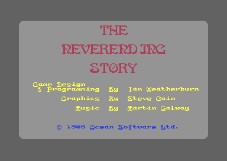
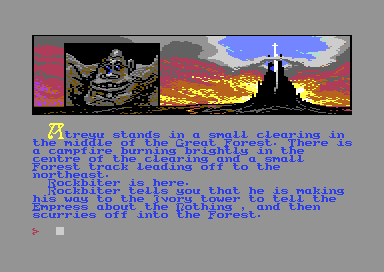

<meta charset="utf-8">
<meta name="viewport" content="width=device-width, initial-scale=1">
<title>{{title}}</title>
<link rel="preconnect" href="https://fonts.googleapis.com">
<link rel="stylesheet" href="https://fonts.googleapis.com/css2?family=Lato:wght@400;700;900&family=IBM+Plex+Mono:wght@400;500&display=swap">
<style>
:root{
  --bg:#23262d; --paper:#e9e7e1; --surface:#ffffff; --surface-2:#f1efea; --line:#d5d3cc; --line-soft:#e0ded8;
  --ink:#2f3136; --ink-soft:#55585f; --ink-mute:#80838a;
  --link:#1f5fa8; --link-hover:#154480; --accent:#1f5fa8;
  --amber:#c25a00; --cyan:#1f5fa8; --coral:#d04a3a; --green:#2a8a4a; --violet:#4a5bd6; --hl:#fff0c2;
  --chip:#2f3136; --chip-ink:#ffffff;
  --c64blue:#40318d; --c64grey:#686868;
  --fd:'Lato',system-ui,sans-serif; --fb:'Lato',system-ui,sans-serif; --fm:'IBM Plex Mono',ui-monospace,Menlo,monospace;
  --col:1080px; --gx:68px; --fs:17px; --lh:1.6; --hw:900; --h1:46px; --h2:26px; --sy:48px; --pp:26px; --r:10px;
  --plate-shadow:0 1px 2px rgba(0,0,0,.05),0 4px 14px rgba(0,0,0,.05);
}
*{box-sizing:border-box}
html{background:var(--bg);min-height:100%}
body{background:var(--paper);color:var(--ink);font-family:var(--fb);font-size:var(--fs);line-height:var(--lh);max-width:var(--col);margin:0 auto;min-height:100vh;padding:0 0 4rem}
h1,h2,h3{font-weight:var(--hw);letter-spacing:-.01em;text-wrap:balance;color:var(--ink);margin:0}
.wrap{padding:0 var(--gx)}
.hero{padding:48px var(--gx) 8px;text-align:left}
.eyebrow{font-family:var(--fm);font-size:12px;letter-spacing:.08em;text-transform:uppercase;color:var(--ink-mute);margin:0 0 10px}
.hero h1{font-size:var(--h1);line-height:1.15;letter-spacing:-.02em;margin:0 0 14px}
.hero .sub{margin:0 0 .6em;color:var(--ink-soft)}
section{padding:var(--sy) 0 24px}
section:last-of-type{border-bottom:none}
.fig{font-family:var(--fm);font-size:12px;letter-spacing:.08em;text-transform:uppercase;color:var(--ink-mute);margin:0 0 10px}
h2.t{font-size:var(--h2);margin-bottom:12px}
.lede{color:var(--ink-soft);margin:0 0 30px}
.plate{background:var(--surface);border:1px solid var(--line);border-radius:var(--r);padding:var(--pp);box-shadow:var(--plate-shadow)}
.cap{font-size:14px;color:var(--ink-mute);margin-top:14px;line-height:1.55}
.cap b{color:var(--ink);font-weight:700}
code{font-family:var(--fm);font-size:.82em;background:var(--chip);color:var(--chip-ink);border-radius:4px;padding:2px 6px;white-space:nowrap}

a{color:var(--link)} a:hover{color:var(--link-hover)}
.nes-pics{display:grid;grid-template-columns:1fr 1fr;gap:16px;margin:22px 0 0}
.nes-pics figure{margin:0}
.nes-pics img{display:block;width:100%;height:auto;image-rendering:pixelated;border-radius:4px}
.nes-pics figcaption{font-size:13px;color:var(--ink-mute);margin-top:6px}
.nes-cv{display:block;width:100%;height:auto;image-rendering:pixelated;background:#000;border-radius:3px}
.nes-fwrap{position:relative;max-width:768px;margin:0 auto}
.nes-mark{position:absolute;left:0;right:0;height:0;border-top:2px dashed #ff932f;pointer-events:none}
.nes-mark span{position:absolute;right:4px;top:-20px;font-family:var(--fm);font-size:11px;color:#fff;background:rgba(0,0,0,.7);padding:1px 5px;border-radius:3px}
.nes-bar{display:flex;flex-wrap:wrap;align-items:center;gap:8px 14px;margin:0 0 12px;font-family:var(--fm);font-size:12.5px;color:var(--ink-soft)}
.nes-bar label{display:inline-flex;align-items:center;gap:6px;cursor:pointer}
.nes-bar select,.nes-bar input[type=text]{font:inherit;background:var(--surface);border:1px solid var(--line);color:var(--ink);padding:5px 8px;border-radius:6px;max-width:100%}
.nes-bar input[type=text]{min-width:min(100%,320px);text-transform:uppercase}
.nes-bar input[type=range]{width:min(100%,260px)}
.nes-bar button{font:inherit;background:var(--surface);border:1px solid var(--line);color:var(--ink);padding:4px 9px;border-radius:6px;cursor:pointer}
.nes-bytes{display:flex;flex-wrap:wrap;gap:3px;margin:10px 0 4px;font-family:var(--fm);font-size:12px}
.nes-bytes span{padding:2px 4px;border-radius:3px;background:var(--surface-2);border-bottom:3px solid var(--c,#ccc)}
.nes-bytes span.nes-on{background:var(--hl)}
.nes-key{display:flex;flex-wrap:wrap;gap:6px 16px;font-family:var(--fm);font-size:12px;color:var(--ink-soft);margin:6px 0 0}
.nes-key i{display:inline-block;width:10px;height:10px;border-radius:2px;margin-right:6px;background:var(--c)}
.nes-tbl{border-collapse:collapse;width:100%;font-size:14px;margin:4px 0 0}
.nes-tbl th{font-family:var(--fm);font-size:11.5px;letter-spacing:.05em;text-transform:uppercase;color:var(--ink-mute);font-weight:500;text-align:left;padding:6px 8px;border-bottom:1px solid var(--line)}
.nes-tbl td{padding:6px 8px;border-bottom:1px solid var(--line-soft);vertical-align:top}
.nes-tbl td.nes-n{font-family:var(--fm);font-size:12.5px;white-space:nowrap}
.nes-script{font-family:var(--fm);font-size:12.5px;line-height:1.6;margin:10px 0 0;padding:0;list-style:none}
.nes-script li{margin:0 0 6px}
.nes-script .nes-if{color:var(--violet)}
.nes-script .nes-do{display:block;padding-left:1.4em}
.nes-out{font-family:var(--fm);font-size:12.5px;line-height:1.7;margin:10px 0 0;padding:10px 12px;background:var(--surface-2);border-radius:6px;min-height:2.4em}
.nes-out b{color:var(--ink)}
.nes-two{display:grid;grid-template-columns:minmax(0,1fr) minmax(0,1fr);gap:22px}
.nes-icons{display:flex;flex-wrap:wrap;gap:6px;margin:10px 0 0}
.nes-icons canvas{width:64px;height:64px;image-rendering:pixelated;background:#000;border-radius:3px;cursor:pointer;outline:2px solid transparent}
.nes-icons canvas.nes-on{outline-color:#ff932f}
.nes-icons canvas.nes-dim{opacity:.4}
.nes-frame312{display:block;width:100%;height:auto;image-rendering:pixelated;border-radius:3px}
.nes-big{font-family:var(--fm);font-size:28px;font-weight:500;color:var(--ink)}
.nes-err{color:var(--coral);font-family:var(--fm);font-size:13px}
.nes-mem{display:flex;height:34px;border-radius:5px;overflow:hidden;margin:8px 0 4px;font-family:var(--fm);font-size:11px}
.nes-mem div{display:block;min-width:0;line-height:34px;text-align:center;padding:0 4px;color:#fff;white-space:nowrap;overflow:hidden;text-overflow:ellipsis;cursor:pointer;border-right:1px solid rgba(255,255,255,.5)}
.nes-mem div.nes-on{box-shadow:inset 0 0 0 3px #ff932f}
details.nes-more{margin-top:14px}
details.nes-more summary{cursor:pointer;font-family:var(--fm);font-size:12.5px;color:var(--link)}
.nes-one{display:block;max-width:420px;margin-bottom:18px}
.nes-one img{max-width:384px}
.nes-two figure{margin:0}
.nes-two figure img{display:block;width:100%;height:auto;image-rendering:pixelated;border-radius:4px}
.nes-two figcaption{font-size:13px;color:var(--ink-mute);margin-top:6px}
.nes-tbl tr.nes-bad td{background:#fbe3df}
.nes-bar button:disabled{opacity:.4;cursor:default}
.nes-bar button.nes-on{outline:2px solid #ff932f}
.nes-unseen{display:flex;gap:16px;align-items:flex-start;flex-wrap:wrap}
.nes-unseen canvas{image-rendering:pixelated;border-radius:3px;background:#000}
#nes-ucv{width:128px;height:128px}
.nes-svgwrap{overflow-x:auto;margin:4px 0 8px}
#nes-svg{display:block;width:100%;height:auto;font-family:var(--fm);font-size:12px}
#nes-svg .nes-node{cursor:pointer}
#nes-svg .nes-node rect:last-of-type{fill:var(--surface);stroke:#80838a;stroke-width:1.5}
#nes-svg .nes-node text{fill:var(--ink)}
#nes-svg .nes-node:hover rect:last-of-type,#nes-svg .nes-node:focus rect:last-of-type{stroke:#1f5fa8;stroke-width:2.5}
#nes-svg .nes-node.nes-on rect:last-of-type{fill:#ff932f;stroke:#c25a00}
#nes-svg .nes-node:focus{outline:none}
.nes-gap{margin-top:10px}
.nes-facts{margin-top:14px}
.nes-h{font-family:var(--fm);font-size:11.5px;letter-spacing:.05em;text-transform:uppercase;color:var(--ink-mute);margin:6px 0 0}
.nes-tbl th[scope]{white-space:nowrap}
.nes-bar label{max-width:100%;min-width:0}
.nes-bar label select{min-width:0;flex:0 1 auto;text-overflow:ellipsis}
@media (max-width:760px){.nes-pics,.nes-two{grid-template-columns:1fr}}
@media (max-width:650px){:root{--gx:18px;--h1:36px;--sy:32px;--pp:14px}}
</style>
<!-- tabs -->
<header class="hero">
  <p class="eyebrow">{{platform}} · {{year}} · {{publisher}}</p>
  <h1>{{title}}</h1>
  <p class="sub">A text adventure in three parts whose whole story is bytecode for one small interpreter. Its only random number is the line the TV picture has reached when a script asks.</p>
</header>
<main class="wrap">
<section id="nes-game">
  <p class="fig">01 · The game</p>
  <h2 class="t">Atreyu's quest</h2>
  <p>The NeverEnding Story follows the film of 1984. Fantasia is being eaten away by the Nothing, its Childlike Empress is ill, and the boy Atreyu is sent to find a cure. The player is Atreyu, and types what he should do: GET AURYN, RIDE ARTAX, BLOW HORN, FLY SOUTH. The game answers in a few lines of text, with a picture of the place or the event at the top left of the screen and a small picture of each thing Atreyu carries at the top right.</p>
  <p>The game is in three parts, loaded one after another: the Great Forest, the Swamps of Sadness and the Southern Oracle; the ruins of Spook City, its well and its dungeons; then the asteroids left of Fantasia, the mazes of the Ivory Tower and the Empress at the top of it. Whatever Atreyu carries at the end of a part he keeps for the next, except Auryn, which Part 2 takes away on its first turn and puts on the hill, room <code>$36</code>, when he has the golden key in the treasure room (<code>$2F06</code>). He has a strength that the swamps, the fog and poison wear down, a light that he needs underground, and the werewolf Gmork on his heels through the first part.</p>
  <p>Ocean published it in 1985. Ian Weatherburn designed and programmed it, Steve Cain drew the graphics and Martin Galway wrote the music (the opening's credits). The copy analysed here is a disk crack of Ocean's cassette release.</p>
  <div class="nes-pics">
    <figure><figcaption>The opening, while the title tune plays.</figcaption></figure>
    <figure><figcaption>The first room, with Rockbiter passing through.</figcaption></figure>
  </div>
</section>

<section id="nes-music">
  <p class="fig">02 · The sound</p>
  <h2 class="t">Music: Martin Galway's title tune</h2>
  <p class="lede">The only sound in the game is the tune that plays over the opening, until a key is pressed. The player below runs the game's own music driver.</p>
  <div class="plate">
    <div id="nes-sid"></div>
    <p class="cap" id="nes-sid-cap">The driver's code (<code>$9680-$9FEE</code>), its data (<code>$F000-$F768</code>) and its zero page run on the kit's 6502 simulator inside the page, called as the opening calls them: <code>MUSIC_STOP</code> and <code>MUSIC_INIT</code> once, then <code>MUSIC_PLAY</code> once a frame. <code>test_music.js</code> makes the same calls on the simulator directly and finds every SID write the same, in the same order.</p>
  </div>
  <p>The tune is three voices from three streams of notes and commands (<code>$F250</code>, <code>$F5F3</code> and <code>$F6BE</code>). Voice 1 has the melody, with a vibrato in four phases and a sweep of its pulse width; voices 2 and 3 play broken chords and a bass from short patterns that the stream calls again and again at different pitches (<code>$9BE4</code>, <code>$9E26</code>).</p>
  <p>Some of the tune is code. Stream command <code>$9C</code> calls a routine at an address inside the tune's own data (<code>$98DC</code>): the fade out near the end of each pass and the fade in at its start are two such routines (<code>$F406</code>, <code>$F400</code>), and two more flip a note of voice 1 and one of voice 2 between a rest and a pitch each time their phrase comes round, three times a pass (<code>$F495</code>, <code>$F553</code>). The tune therefore repeats exactly only every other pass. One pass is 11,328 frames, 3 minutes 46 seconds.</p>
  <p>Once the game starts, nothing writes to the sound chip: the driver's memory from <code>$9700</code> is overwritten by the disk loader the moment the opening ends (<code>$070F</code>).</p>
</section>

<section id="nes-screen">
  <p class="fig">03 · The play screen</p>
  <h2 class="t">One screen in two modes</h2>
  <p class="lede">The top ten character rows are a multicolour bitmap; the fifteen below are text. A raster interrupt switches the video chip between the two as the beam passes.</p>
  <div class="plate">
    <div class="nes-bar"><label><input id="nes-split" type="checkbox" checked> Mark where the interrupt switches</label></div>
    <div class="nes-fwrap" id="nes-fwrap"><canvas id="nes-fcv" class="nes-cv" width="384" height="272" aria-label="The play screen in Part 2, drawn from memory"></canvas></div>
    <p class="cap">Drawn by the page from one frame of Part 2's first room, recorded in the emulator after LOOK: memory as the frame began and the eight writes during it that change the picture, to <code>$D011</code>, <code>$D016</code>, <code>$D018</code> and <code>$D021</code>, with the line and cycle of each. The interrupt's other six writes only set the next line to stop at and acknowledge the interrupt. Drawn by the site's renderer, all 104,448 pixels are the same as the emulator's picture of that frame.</p>
  </div>
  <p>The interrupt runs three times a frame (<code>$A7E0</code>, which picks its phase with a branch it rewrites). On line 49 it sets the background black and turns on the multicolour bitmap at <code>$E000</code> (<code>$A7E3</code>); on line 130 it sets the background grey and the text mode with the game's own character set at <code>$F800</code> (<code>$A80A</code>); on line 138 it only arms the next frame. The screen bytes at <code>$CC00</code> serve both: as colours for the bitmap above the switch and as characters below it.</p>
  <p>The band is built in layers. The backdrop, a sunset over the Ivory Tower, is copied back from a saved copy at <code>$BC00</code>; then come the icons of what Atreyu carries, at the right; then the picture of the room or the event, at the left (<code>RENDER_ROOM_GRAPHICS</code>, <code>$0570</code>).</p>
</section>

<section id="nes-pictures">
  <p class="fig">04 · Pictures</p>
  <h2 class="t">Every picture is a patch on one painted sunset</h2>
  <p class="lede">Every picture is a rectangle of character cells copied over the backdrop. Pick one; the page draws it with a port of the game's own copying routine.</p>
  <div class="plate">
    <div class="nes-bar">
      <label>Picture <select id="nes-pic"></select></label>
      <label><input id="nes-back" type="checkbox" checked> Over the backdrop</label>
      <label><input id="nes-grid" type="checkbox"> Show the cells</label>
    </div>
    <canvas id="nes-pcv" class="nes-cv" width="640" height="160" aria-label="The picture band with the chosen picture"></canvas>
    <div class="nes-bytes" id="nes-prec"></div>
    <p class="cap" id="nes-pcap"></p>
  </div>
  <p>A picture record (<code>$0BF9</code>, six bytes) gives the character row and column to draw at, the address of the picture's bytes, and its height and width in cells. <code>BLIT_ROOM_GRAPHIC</code> (<code>$05BF</code>) copies it one character row at a time: eight bitmap bytes for each cell of the row, then a screen byte for each (two colours), then a colour byte for each (a third). A picture of h rows and w cells is therefore h × w × 10 bytes, and the routine needs no other table than the three that give each row's address in the bitmap, the screen and colour memory (<code>$0BBD</code>, <code>$0BD1</code>, <code>$0BE5</code>).</p>
  <p>Picture 0, an open book on a desk, stays in memory with the engine (<code>$A100</code>); 59 of the 125 rooms show it. Pictures 1-20 come with Part 1, 21-36 with Part 2 and 37-56 with Part 3, each part's set starting at <code>$4300</code> in its file. <code>OBJ_ROOM_TABLE</code> (<code>$0D4F</code>) names each room's picture, and a script can show any picture of the part for an event.</p>
  <div class="plate" style="margin-top:22px">
    <div class="nes-icons" id="nes-icons"></div>
    <p class="cap" id="nes-icap">The 36 icon slots at <code>$A560</code>, 4 × 4 cells and 160 bytes each, drawn by the same port. Pick one to put it in the band above. Eight are never shown. Slots 4 and 5 hold the raster interrupt's code (<code>$A7E0</code>), 29 to 31 the opening's title and credits (<code>$B780</code>), and 27, a crucifix, is drawn but no object or script uses it: each holds 0, Auryn's object number, in the map of icon slots to objects at <code>$22A4</code>, and the search for Auryn stops at slot 0. Slot 9 is the spider's web, which no command takes (GET WEB runs <code>$2D86</code>, which never does), and slot 11 the padlock, which starts the game gone and which no word or script names.</p>
  </div>
  <p>Icons are pictures too. Each of the six icon records at <code>$2943</code> is a picture record whose address the engine changes: TAKE puts the address of the object's icon into the first free one of the five for objects (<code>$0F3A</code>), and the scripts put Falkor's or Artax's into the sixth, the companion's (<code>$113D</code>). A record whose address has a high byte of 0 is skipped.</p>
</section>

<section id="nes-text">
  <p class="fig">05 · Text</p>
  <h2 class="t">A capital letter marks where each word starts</h2>
  <p class="lede">The game's texts are stored without spaces. Pick a text; the page prints it with a port of the game's printer, in the game's own letters.</p>
  <div class="plate">
    <div class="nes-bar">
      <label>Part <select id="nes-tpart"><option value="0">1</option><option value="1">2</option><option value="2">3</option></select></label>
      <label>Text <select id="nes-tkind"><option value="room">a room's description</option><option value="event">an event</option><option value="sentence">a sentence of the engine</option></select></label>
      <select id="nes-tnum"></select>
    </div>
    <canvas id="nes-tcv" class="nes-cv" width="640" height="240" aria-label="The text as the game prints it"></canvas>
    <div class="nes-bytes" id="nes-tbytes"></div>
    <div class="nes-key"><span><i style="--c:#4a5bd6"></i>a word of the dictionary</span><span><i style="--c:#2a8a4a"></i>a word written out</span><span><i style="--c:#c25a00"></i>the end, @</span></div>
    <p class="cap" id="nes-tcap"></p>
  </div>
  <p>A text is a run of words, each starting with a capital letter: "YouAreDeepInThe" is stored with no spaces at all, and the printer (<code>PROCESS_TERM</code>, <code>$0A0E</code>) finds the end of each word at the next capital. A byte with its top bit set stands for a word of a dictionary of 94 (<code>$25DD</code>), whose pointer table the printer reads through <code>$1C67</code>. The printer puts a space after every word unless the next one starts with a full stop, and starts a new line before any word that would not fit in the 40 columns.</p>
  <p>The capitals are only in the bytes. When it prints a letter A-Z, the printer adds <code>$20</code> to make it lower case unless the flag at <code>$0AFF</code> is set, which a full stop, the start of each message and event and each word from the dictionary set, and the next capital clears (<code>PRINT_WORD</code>, <code>$0ADB</code>; <code>$0B12</code>, <code>$09A1</code>, <code>$09D8</code>, <code>$0ABF</code>). A room's description starts with a capital two cells high, in yellow (<code>$0957</code>): four glyphs of the character set, two on one line and two on the next, with 38 spaces printed between them.</p>
</section>

<section id="nes-parser">
  <p class="fig">06 · Commands</p>
  <h2 class="t">The parser reads three letters of each word</h2>
  <p class="lede">Type a command. The page runs a port of the game's parser on it and shows what the engine makes of it.</p>
  <div class="plate">
    <div class="nes-bar">
      <label>Command <input id="nes-cmd" type="text" value="get the apple and go east" maxlength="78" spellcheck="false" autocomplete="off"></label>
      <span id="nes-eg"></span>
    </div>
    <table class="nes-tbl" id="nes-words"></table>
    <div class="nes-out" id="nes-pout"></div>
    <ul class="nes-script" id="nes-pscript"></ul>
    <p class="cap" id="nes-pcap2"></p>
  </div>
  <p>The line editor keeps letters and spaces only, folded to lower case, up to 78 of them (<code>$0806</code>). The parser (<code>PARSE_INPUT</code>, <code>$122F</code>) splits the line at spaces and looks each word up by its first three letters in a vocabulary of 142 entries (<code>$1A2E</code>), each the three letters and an id. A word it cannot find ends the line: "I don't understand the word", and the word in quotes. Ids below <code>$32</code> are verbs, among them the ten directions; <code>$32</code> and up are nouns, and a noun's id less <code>$32</code> is the number of the object it names (six of the 54 objects have no word, so no command can name them); 0 is a word to skip, such as THE, GO or AT.</p>
  <p>Three letters are not enough for the diagonal directions, so the parser looks further for two of them: NORTH or SOUTH with THE or THW as its letters 4-6 becomes northeast, northwest, southeast or southwest (<code>$1335</code>). Then <code>RESOLVE_VERB_NOUN</code> (<code>$1396</code>) takes the first verb, and the next word after it that is not one to skip as the noun, and <code>DISPATCH_COMMAND</code> (<code>$1403</code>) finds the first of 70 verb-and-noun pairs that matches (<code>$19A0</code>), whose script it runs. AND, or any word after the noun, starts the next command.</p>
</section>

<section id="nes-turn">
  <p class="fig">07 · The scripts</p>
  <h2 class="t">The whole story is bytecode</h2>
  <p class="lede">All of the game's story is bytecode: tests and actions run by one small interpreter. Pick a script to read it decoded.</p>
  <div class="plate">
    <div class="nes-bar"><label>Script <select id="nes-scr"></select></label></div>
    <ul class="nes-script" id="nes-sprose"></ul>
    <div class="nes-bytes" id="nes-sbytes"></div>
    <p class="cap" id="nes-scap"></p>
  </div>
  <p>A script is clauses. Each clause is tests, opcodes <code>$80-$89</code>, then actions, <code>$00-$20</code>, and ends with <code>$FE</code>; <code>$FF</code> ends the script. A test that fails skips the rest of its clause (<code>RUN_SCRIPT</code>, <code>$1605</code>). The tests ask whether an object is here, carried or gone, whether a flag is set, what a counter holds, which room the player is in, or take a chance; the actions move objects and the player, set flags and counters, print events and sentences, show pictures and icons, and load the next part.</p>
  <p>Each turn the engine runs the resident turn script (<code>$1C6F</code>), which keeps Atreyu's strength and his light; the part's turn script (<code>$2F06</code> in each part), which runs Gmork's chase in Part 1; and the script of the room Atreyu is in. Then it reads a line and runs the script of the pair the command matched. 54 object locations, 32 flags and 16 counters (<code>$28BF</code>, <code>$290F</code>, <code>$292F</code>) are most of the game's state, with the room, the part and the icons on show (<code>$293F</code>, <code>$2940</code>, <code>$2943</code>). The scripts of every room are on the <a href="levels.html">Maps / levels</a> tab.</p>
</section>

<section id="nes-chance">
  <p class="fig">08 · Chance</p>
  <h2 class="t">The only random number is the raster line</h2>
  <p class="lede">The game has one random number: the line the video chip is drawing when a script asks. Move the slider to choose a test's number; each line of the frame below shows whether the test passes there.</p>
  <div class="plate">
    <div class="nes-bar">
      <label>Test <code>$88</code> with <input id="nes-cn" type="range" min="0" max="255" value="200"> <b id="nes-cnv">200</b></label>
      <button type="button" data-n="200">The sphinxes, 200</button><button type="button" data-n="125">Morla, 125</button><button type="button" data-n="50">Gmork, 50</button><button type="button" data-n="25">The eyes blink, 25</button>
    </div>
    <div class="nes-two">
      <canvas id="nes-ccv" class="nes-frame312" width="312" height="156" aria-label="The 312 lines of a frame, coloured by whether the test passes"></canvas>
      <div><p class="nes-big" id="nes-cbig"></p><p id="nes-ctext"></p></div>
    </div>
    <p class="cap">The page's test is a port of <code>COND_RANDOM</code> (<code>$1222</code>); <code>test_chance.js</code> runs the game's routine for every number and every one of the 312 lines, 79,872 cases, and finds the same answer in each.</p>
  </div>
  <p>The test <code>$88 n</code> reads the raster register, <code>$D012</code>, and passes when n is at least the value it reads (<code>$0695</code>, <code>$1222</code>). The register holds the low eight bits of the line, and a PAL frame has 312 lines, so the values 0-55 come round twice a frame and the rest once. When the test can fall anywhere in the frame, a number n passes on n + 1 + min(n, 55) + 1 of the 312 lines: 102 for 50, a third, where 51 in 256, a fifth, is what the number suggests.</p>
  <p>At the sphinxes the game uses it twice. Each turn there, a test of 25 decides whether the sphinxes' eyes blink (52 lines of 312). Going south while the eyes are open, a test of 200 kills Atreyu on 257 lines; he survives only on the 55 lines whose low byte is 201-255, about one try in six, and then needs Auryn too. Going south on the turn the eyes have just blinked, with Auryn, always works.</p>
</section>

<section id="nes-parts">
  <p class="fig">09 · Three parts</p>
  <h2 class="t">The engine stays, the story changes</h2>
  <p class="lede">The engine loads once and stays in memory to the end. Each part is a file that loads over the same 26,368 bytes, <code>$2F00-$95FF</code>. Pick a block of memory to see what is in it.</p>
  <div class="plate">
    <div class="nes-mem" id="nes-mem"></div>
    <p class="nes-out" id="nes-memo"></p>
  </div>
  <p>A part holds its rooms' descriptions and scripts, its events and its pictures, and nothing else: no code at all. The engine keeps everything that has to last, which is why objects carried from one part to the next arrive in the next: their locations are in the engine (<code>$28BF</code>), and no load touches them. Rooms are numbered across the game, <code>$00-$28</code> in Part 1, <code>$29-$4C</code> in Part 2 and <code>$4D-$7C</code> in Part 3, and the engine subtracts the loaded part's first room before it reads that part's tables (<code>$0DCC</code>).</p>
  <p>A part ends with a script action, <code>$1F</code> (<code>ACTION_NEXT_PART</code>, <code>$0FF1</code>): the engine counts the part on, puts Atreyu in the new part's starting room (Part 3's first, <code>$4D</code>, but Part 2's <code>$34</code>, at <code>$0427</code>), asks for Space and loads. The loader in this copy is the crackers': it adds one to the digit in the name "PART 0" and loads that file, whichever part the game asked for, which goes wrong after a restart (<a href="discoveries.html">Discoveries</a>).</p>
</section>
</main>
<footer style="margin:16px 0 0;padding:22px var(--gx) 0;border-top:1px solid #e0ded8;font-family:'IBM Plex Mono',ui-monospace,Menlo,monospace;font-size:12px;color:#80838a"><a href="https://github.com/gamesexplained/gamesexplained" style="color:#1f5fa8;text-decoration:none">GitHub</a> · <a href="https://discord.gg/3V9GWyRDWV" style="color:#1f5fa8;text-decoration:none">Discord</a><br>© Games Explained contributors. Write-ups, facts and symbol maps are available under <a href="https://creativecommons.org/licenses/by-sa/4.0/" style="color:#1f5fa8;text-decoration:none">CC BY-SA 4.0</a>; code under <a href="https://opensource.org/licenses/MIT" style="color:#1f5fa8;text-decoration:none">MIT</a></footer>
<script>
/* nes-music */
// createDriver for C64Sid: runs Martin Galway's title tune on the game's own driver (its code
// $9680-$9FEE, its data $F000-$F768 and its zero page $10-$21, from the listing) on the kit's 6502
// (C64Cpu, from ../../lib/cpu6502.js, which sid.js passes to createDriver). The listing is the
// opening a few seconds into the tune; its volume, VOLUME ($F082), stands at 15 there, where the
// game as it loads holds 12, the one byte the driver reads that MUSIC_INIT does not set again.
// init() makes the opening's calls ($06FF-$070B): the volume back to 12, MUSIC_STOP ($96A1), then
// MUSIC_INIT ($96DA). play() is MUSIC_PLAY ($9695), which the opening's raster interrupt ($A880)
// calls once a frame; stop() is MUSIC_STOP again, as a key press makes it ($15CC). The tune never
// ends: it fades out and back in at the end of each pass, 11,328 frames. The driver reads no SID
// register, so a read of one stops it.
// D.mem is the driver's bytes, [address, bytes] pairs.
function createDriver(D, C64Cpu) {
  const m = new Uint8Array(0x10000);
  for (const [ad, bytes] of D.mem) m.set(bytes, ad);
  const sid = new Uint8Array(25);
  let writes = [], fresh = false, on = false;
  const cpu = new C64Cpu.CPU(m, { port: 0x35, io: {             // the chips at $D000-$DFFF
    read(ad) {
      if (ad >= 0xD400 && ad < 0xD800) throw new Error('the driver read $' + ad.toString(16));
      return m[ad];
    },
    write(ad, val) {
      if (ad >= 0xD400 && ad < 0xD800) { const r = ad & 0x1F; if (r < 25) sid[r] = val; writes.push(r, val); return; }
      m[ad] = val;
    },
  } });
  const call = (entry) => cpu.call(entry, { a: 0, x: 0, y: 0 }, { maxSteps: 200000 });
  return {
    sid,
    get writes() { return writes; },
    // init's writes stay in the list and the first play() adds its own, so the player applies both
    init() { writes = []; fresh = true; m[0xF082] = 12; call(0x96A1); call(0x96DA); on = true; },
    play() { if (!fresh) writes = []; fresh = false; if (on) call(0x9695); },
    stop() { writes = []; fresh = true; call(0x96A1); on = false; },
    playing() { return on; },
    // each voice's place in the tune ($10, $12, $14) and the volume
    voice(x) { return { at: m[0x10 + 2 * x] | m[0x11 + 2 * x] << 8, volume: m[0xF082] }; },
  };
}
// end of nes-music
</script>
<script>
/* nes-text */
// The engine's text printer, ported routine by routine. nesPrinter(m, st) prints from the tables
// in m, the engine with a part loaded, onto st, the state the routines share:
//   st.ram     a Uint8Array(65536): the screen matrix at $CC00-$CFE7
//   st.colour  a Uint8Array(1024): colour RAM, $D800-$DBE7, four bits a byte
//   st.at      the cursor, 0-999 from $CC00 (SCREEN_CURSOR_PTR $06/$07, and $08/$09 for colour)
//   st.column  CURRENT_COLUMN ($24), 0-39
//   st.ink     the colour each character gets, $0286
//   st.cap     UPPERCASE_LETTER_FLAG, the operand at $0AFF: 1 prints the next letter A-Z as it is
// and reads from m the switches the engine keeps in its own code: $0AF5, 1 in play (set by
// $076A), which lets letters print in lower case, and $0949, 0 except while the line editor
// shows its cursor. The calls:
//   char(a)       PRINT_CHARACTER ($08DB): screen code a and the ink at the cursor, the cursor on;
//                 reaching $CFE8 scrolls rows 11-24 up a row ($08FF) and clears row 24
//   line()        PRINT_EMPTY_LINE ($0B4B): spaces to the start of the next line, a whole line
//                 when the cursor is already at a line's start
//   term(p)       PROCESS_TERM ($0A0E): the compressed text at p up to its '@'. A byte with bit 7
//                 set is word n of the dictionary (pointers at the address in $1C67, each word its
//                 length and then its letters); any other byte starts a literal word, which runs
//                 until a capital, a dictionary byte or '@'. A word that would reach column 41
//                 starts a new line; a space follows each word unless the next starts with '.'
//                 or the cursor is at a line's start
//   word(p, n)    PRINT_WORD ($0ADB): n bytes from p. '.' sets cap, '<' starts a line, $FF takes
//                 the next byte as the ink, and a letter A-Z prints as a capital only when cap is
//                 set (which clears it) or $0AF5 is 0, otherwise in lower case (+ $20)
//   sentence(i)   PRINT_SENTENCE ($099B): a line, cap set, the engine's sentence i
//   event(i)      PRINT_EVENT_TEXT ($09D7): cap set, a line and two spaces, the part's event i
//   room(r)       PRINT_ROOM_TEXT ($0B58): a line, two spaces, the first letter as a drop capital
//                 two cells high in yellow ($0957: glyphs $7B + 4 x (letter - 'A') to + 3), then
//                 the rest in blue (ink 6). r is the room's number across the game; the part's
//                 first room, $0DCC + the part in $2940, is subtracted
// Each returns the address after what it read, where that is the routine's to know.
function nesPrinter(m, st) {
  const w16 = (a) => m[a] | m[a + 1] << 8;
  const P = {
    char(a) {
      st.ram[0xCC00 + st.at] = a; st.colour[st.at] = st.ink & 15; st.at++;
      st.column = st.column === 39 ? 0 : st.column + 1;
      if (st.at === 1000) {                       // $CFE8: rows 11-24 to rows 10-23 ($0905)
        for (let i = 0; i < 560; i++) { st.ram[0xCD90 + i] = st.ram[0xCDB8 + i]; st.colour[400 + i] = st.colour[440 + i]; }
        st.at = 960;
        for (let i = 39; i >= 0; i--) st.ram[0xCC00 + 960 + i] = 0x20;
      }
      if (m[0x0949]) { st.ram[0xCC00 + st.at] = 0x3D; st.colour[st.at] = 15; }
    },
    line() { do P.char(0x20); while (st.column !== 0); },
    word(p, n) {
      do {
        const a = m[p];
        if (a === 0x2E) { st.cap = 1; P.char(0x2E); }
        else if (a === 0x3C) P.line();
        else if (a === 0xFF) { p = (p + 1) & 0xFFFF; n = (n - 1) & 255; st.ink = m[p]; }
        else if (a >= 0x41 && a < 0x5B) {
          if (!m[0x0AF5]) P.char(a);
          else if (st.cap) { st.cap = 0; P.char(a); }
          else P.char(a + 0x20);
        } else P.char(a);
        p = (p + 1) & 0xFFFF; n = (n - 1) & 255;
      } while (n !== 0);
      return p;
    },
    term(p) {
      for (;;) {
        let n = 1;
        const a = m[p];
        if (a === 0x40) return p;
        if (a & 0x80) {                             // a word of the dictionary ($0A73)
          let q = w16((w16(0x1C67) + ((a & 0x7F) << 1)) & 0xFFFF);
          n = m[q];
          if (((n + st.column) & 255) >= 0x29) P.line();
          q = (q + 1) & 0xFFFF; st.cap = 1; P.word(q, n);
          p = (p + 1) & 0xFFFF; st.cap = 0;
        } else {
          let y = 1, last = false;
          for (;;) {
            const b = m[(p + y) & 0xFFFF];
            if (b === 0x40) { last = true; break; }
            if ((b >= 0x41 && b < 0x5B) || (b & 0x80)) break;
            n = (n + 1) & 255; y = (y + 1) & 255;
          }
          if (((n + st.column) & 255) >= 0x29) P.line();
          p = P.word(p, n);
          if (last) { P.char(0x20); return p; }
        }
        if (m[p] !== 0x2E && st.column !== 0) P.char(0x20);   // TEST_ADD_SPACE ($0A4A)
      }
    },
    sentence(i) {
      P.line(); st.cap = 1;
      return P.term(w16((w16(0x1C69) + ((i & 255) << 1)) & 0xFFFF));
    },
    event(i) {
      st.cap = 1; P.line(); P.char(0x20); P.char(0x20);
      return P.term(w16((w16(0x2F02) + ((i & 255) << 1)) & 0xFFFF));
    },
    room(r) {
      P.line();
      const k = (r - m[0x0DCC + m[0x2940]]) & 255;
      let p = w16((w16(0x2F00) + (k << 1)) & 0xFFFF);
      P.char(0x20); P.char(0x20);
      const g = ((((m[p] - 0x41) & 255) << 2) + 0x7B) & 255, ink = st.ink;
      st.ink = 7; P.char(g); P.char((g + 1) & 255); st.ink = ink;
      for (let x = 0x26; x > 0; x--) P.char(0x20);
      st.ink = 7; P.char((g + 2) & 255); P.char((g + 3) & 255); st.ink = ink;
      p = (p + 1) & 0xFFFF; st.ink = 6;
      return P.term(p);
    },
  };
  return P;
}
// end of nes-text
</script>
<script>
/* nes-blit */
// The picture band as the engine draws it, on a copy of the memory the engine reads and writes.
// vid is { ram, colour }: ram a Uint8Array(65536) that takes the bitmap and screen bytes at their
// own addresses, colour a Uint8Array(1024) for colour RAM ($D800-$DBFF), which keeps four bits.
// nesBlit(m, at, vid) is BLIT_ROOM_GRAPHIC ($05BF): the six-byte record at m[at] (row, column,
// source address low and high, height and width, in character cells) copied a character row at a
// time from the source onwards: width x 8 bitmap bytes to the address the table at $0BBD gives the
// row plus column x 8, then width screen bytes to $0BD1's address for the row plus the column,
// then width colour bytes to $0BE5's. The sums are the routine's: column x 8 keeps nine bits and
// width x 8 eight ($05E9, $0601).
// nesRestore(m, vid, back) is RESTORE_GAMEPLAY_DISPLAY ($07A2): 400 screen bytes from back.screen
// to $CC00, 400 colour bytes from back.colour to $D800 and 3,200 bitmap bytes from back.bitmap to
// $E000. In play back is { screen: 0xC880, colour: 0xCA10, bitmap: 0xBC00 }, where $070F copies
// the backdrop as it loaded at $EC80, $EE10 and $E000.
// nesRender(m, vid, back) is RENDER_ROOM_GRAPHICS ($0570): the backdrop restored, then each of the
// six icon records at the address in $28B9 whose source high byte is not 0, then the room picture,
// record m[$2942] of the table at the address in $0435.
// nesBand(ctx, vid, s, rows) draws character rows 0 to rows - 1 (10, the band) at s pixels a
// pixel, as the video chip shows the band: a multicolour bitmap at $E000 with its screen bytes at
// $CC00 and colour RAM, on black ($A7E3 sets $D021 to 0). Bit pairs 00, 01, 10 and 11 take the
// background, the screen byte's high and low nibbles and the colour nibble.
function nesBlit(m, at, vid) {
  const w16 = (a) => m[a] | m[a + 1] << 8;
  const put = (a, v) => { if (a >= 0xD800 && a < 0xDC00) vid.colour[a - 0xD800] = v & 15; else vid.ram[a] = v; };
  const col = m[at + 1], h = m[at + 4], w = m[at + 5];
  let src = m[at + 2] | m[at + 3] << 8, row = m[at];
  const last = (row + h) & 255;
  const copy = (dest, n) => {        // COPY_BLIT_ROW ($0676): until the source reaches its end
    const end = (src + n) & 0xFFFF;
    do { put(dest, m[src]); src = (src + 1) & 0xFFFF; dest = (dest + 1) & 0xFFFF; } while (src !== end);
  };
  do {
    copy((w16(0x0BBD + 2 * row) + ((col << 3) & 0x1FF)) & 0xFFFF, (w << 3) & 255);
    copy((w16(0x0BD1 + 2 * row) + col) & 0xFFFF, w);
    copy((w16(0x0BE5 + 2 * row) + col) & 0xFFFF, w);
    row = (row + 1) & 255;
  } while (row !== last);
}
function nesRestore(m, vid, back) {
  for (let i = 0; i < 400; i++) vid.ram[0xCC00 + i] = m[back.screen + i];
  for (let i = 0; i < 400; i++) vid.colour[i] = m[back.colour + i] & 15;
  for (let i = 0; i < 3200; i++) vid.ram[0xE000 + i] = m[back.bitmap + i];
}
function nesRender(m, vid, back) {
  nesRestore(m, vid, back);
  let rec = m[0x28B9] | m[0x28BA] << 8;
  for (let k = 0; k < 6; k++, rec += 6) if (m[rec + 3]) nesBlit(m, rec, vid);
  nesBlit(m, ((m[0x0435] | m[0x0436] << 8) + 6 * m[0x2942]) & 0xFFFF, vid);
}
function nesBand(ctx, vid, s, rows) {
  const PAL = ['#000000', '#ffffff', '#813338', '#75cec8', '#8e3c97', '#56ac4d', '#2e2c9b', '#edf171',
    '#8e5029', '#553800', '#c46c71', '#4a4a4a', '#7b7b7b', '#a9ff9f', '#706deb', '#b2b2b2'];
  rows = rows || 10;
  for (let r = 0; r < rows; r++) for (let c = 0; c < 40; c++) {
    const sc = vid.ram[0xCC00 + 40 * r + c], cols = [0, sc >> 4, sc & 15, vid.colour[40 * r + c] & 15];
    for (let y = 0; y < 8; y++) {
      const b = vid.ram[0xE000 + 320 * r + 8 * c + y];
      for (let x = 0; x < 4; x++) {
        ctx.fillStyle = PAL[cols[(b >> (6 - 2 * x)) & 3]];
        ctx.fillRect((8 * c + 2 * x) * s, (8 * r + y) * s, 2 * s, s);
      }
    }
  }
}
// end of nes-blit
</script>
<script>
/* nes-parse */
// The engine's parser, ported routine by routine. nesParse(m, text) takes a command line as the
// line editor ($0806) stores it at $CBA0 (letters folded to lower case, spaces kept, anything
// else dropped, at most 78 characters) and returns what the engine does with it:
//   { line, words: [{ at, end, buf, id }], out: [...] }
// words are PARSE_INPUT's ($122F): up to 16 starts in PARSED_TOKENS, the words that end before
// the last start counted, each copied into the six-byte buffer at $64 (spaces after it) and looked
// up by VOCAB_LOOKUP ($12C4), which compares three letters with each four-byte entry of the
// vocabulary at the address in $199C until the end mark '@'. An id of 1 or 5 (north, south) with
// "the" or "thw" in letters 4-6 becomes 2, 8, 4 or 6 ($1335, $1360). id is undefined for a word
// left out, and null for the unknown word that ends the parse.
// out lists, in order, what the engine prints and runs:
//   { say: n }                  PRINT_SENTENCE with sentence n
//   { unknown: 'word ' }        the unknown word, printed between quotes after sentence 0 ($12F6)
//   { line: true }              PRINT_EMPTY_LINE
//   { verb, noun, rule }        DISPATCH_COMMAND ($1403) with VERB_ID and NOUN_ID: rule is the
//                               index of the first pair of the table at the address in $199E whose
//                               verb is the verb and whose noun is the noun or $FB, which runs
//                               action script rule; null when the verb has a pair and the noun
//                               none, when nothing runs and sentence 3 follows, and for a pair at
//                               or past ACTION_SCRIPT_COUNT ($2A12), which runs nothing
// RESOLVE_VERB_NOUN ($1396) takes the first id below $32 that is not 0 as the verb, and the next
// word that is not 0 or $FF as the noun ($FA when there is none). An $FF word ("and") between
// them, or any word after the noun, sends what it has and starts again on the rest. A verb that no
// pair names prints sentence 3 and abandons the line.
function nesParse(m, text) {
  const w16 = (a) => m[a] | m[a + 1] << 8;
  const L = [];
  for (const c of String(text).toUpperCase()) {
    if (L.length === 78) break;
    const k = c.charCodeAt(0);
    if (k === 0x20) L.push(0x20); else if (k >= 0x41 && k < 0x5B) L.push(k + 0x20);
  }
  const buf = new Array(81).fill(0x20);
  L.forEach((v, i) => { buf[i] = v; });
  const len = L.length, out = [], words = [];
  const res = { line: String.fromCharCode(...L), words, out, tokens: null, count: 0 };
  if (!len) return res;
  // PARSE_INPUT: where each word starts, in the even bytes of PARSED_TOKENS
  const T = new Array(32).fill(0);
  let count = 0, y = 0, x = 0;
  while (buf[y] === 0x20) { y++; if (y === len) return res; }
  T[x] = y; x += 2;
  scan: for (;;) {
    while (buf[y] !== 0x20) { y++; if (y === len) { count++; T[x] = y + 1; break scan; } }
    const end = y;
    do { y++; if (y === len) { count++; T[x] = end + 1; break scan; } } while (buf[y] === 0x20);
    T[x] = y; count++; x += 2;
    if (x === 0x20) break;
  }
  res.tokens = T; res.count = count;
  // each word looked up
  for (let k = 0; k < count; k++) {
    const b = new Array(6).fill(0x20);
    for (let j = 0, q = T[2 * k]; j < 6 && buf[q] !== 0x20; j++, q++) b[j] = buf[q];
    const wd = { at: T[2 * k], end: T[2 * k + 2], buf: String.fromCharCode(...b), id: null };
    words.push(wd);
    let p = w16(0x199C), id = -1;
    for (;;) {
      if (m[p] === 0x40) break;
      if (m[p] === b[0] && m[p + 1] === b[1] && m[p + 2] === b[2]) { id = m[p + 3]; break; }
      p = (p + 4) & 0xFFFF;
    }
    if (id < 0) {
      out.push({ say: 0 });
      out.push({ unknown: String.fromCharCode(...buf.slice(wd.at, wd.at + ((wd.end - wd.at - 1) & 255))) });
      out.push({ line: true });
      return res;
    }
    if ((id === 1 || id === 5) && b[3] === 0x74 && b[4] === 0x68 && (b[5] === 0x65 || b[5] === 0x77))
      id = id === 1 ? (b[5] === 0x65 ? 2 : 8) : (b[5] === 0x65 ? 4 : 6);
    wd.id = id; T[2 * k + 1] = id;
  }
  // RESOLVE_VERB_NOUN and DISPATCH_COMMAND
  let unhandled = 1, verb = 0, noun = 0xFA;
  const n2 = (count * 2) & 255;
  const dispatch = () => {
    unhandled = 0;
    let p = w16(0x199E), k = 0;
    for (;; p += 2, k++) {
      if (m[p] === verb) { if (m[p + 1] === 0xFB || m[p + 1] === noun) break; continue; }
      if (m[p] === 0xFF) { out.push({ verb, noun, rule: null }); out.push({ say: 3 }); return false; }
    }
    out.push({ verb, noun, rule: (k & 0x80) || k >= m[0x2A12] ? null : k });
    return true;
  };
  x = 1;
  for (;;) {
    noun = 0xFA;
    let found = false;
    for (; x < n2; x += 2) { const a = T[x]; if (a && !(a & 0x80) && a < 0x32) { found = true; break; } }
    if (!found) { if (unhandled) { out.push({ say: 1 }); out.push({ line: true }); } return res; }
    verb = T[x]; x += 2;
    if (x >= n2) { dispatch(); return res; }
    let again = false;
    for (; x < n2; x += 2) {
      const a = T[x];
      if (!a) continue;
      if (a === 0xFF) { again = true; break; }
      noun = a; x += 2;
      if (x < n2) again = true;
      break;
    }
    if (!again) { dispatch(); return res; }
    if (!dispatch()) return res;
  }
}
// end of nes-parse
</script>
<script>
/* nes-chance */
// COND_RANDOM ($1222), the scripts' test $88 n: true when n is at least the low byte of the
// raster line READ_RASTER_LINE ($0695) reads from $D012, which counts the 312 lines of a PAL frame
// (0-311) and drops the ninth bit, so the values 0-55 come twice a frame. nesChance(n, line) is
// the test on one line; nesChanceLines(n) the lines of a frame on which it passes.
function nesChance(n, line) { return (n & 255) >= (line & 255); }
function nesChanceLines(n) { let k = 0; for (let l = 0; l < 312; l++) if (nesChance(n, l)) k++; return k; }
// end of nes-chance
</script>
<script>
/* nes-data */
// What the pages read from the engine and a part, from a 64 KB image of both (the engine's listing
// with one part's laid over $2F00-$95FF). Needs nes-text (nesPrinter).
// nesPlain(m, part, fn) runs fn(P) on a printer for that part (P.room, P.event, P.sentence, as
// nesPrinter) and gives back what it printed as one line of text: the drop capital as its letter,
// line ends (a word that fills a line's last column too) and runs of spaces as one space.
// nesScript(m, p) reads the script at p as RUN_SCRIPT ($1605) steps through it: { ops: [{ at,
// op, args }], end }, op the opcode, args its operands, end the address after the $FF. Tests
// $80-$89 and actions $00-$20 take the operands the handlers fetch (FETCH_SCRIPT_BYTE, $15D8);
// $FE ends a clause and $FF the script.
// nesProse(m, part, p) gives the script at p in words: [{ tests: [...], acts: [...] }], a clause
// each, its tests and actions as text.
// nesRooms(m, part) gives the part's rooms: [{ room, pic, exits: [[direction, room]], objects,
// script }], from PART_ROOM_BASE_IDS ($0DCC), OBJ_ROOM_TABLE ($0D4F), the ten exit tables at the
// address in $16B4 (pairs of rooms, sorted, $FF at the end), the starting locations at $226C and
// the room script pointers at the address in $2F04. The part's last room is the one before the
// next part's first, or $7C.
const NES_OBJ = ['Auryn', 'Gmork', 'a tree', 'the Ivory Tower', 'the thorn bushes', 'Falkor', 'Engywook', 'Urgl',
  'the telescope', 'the crystal', 'Nighthob', 'Rockbiter', 'Teenyweeny', 'the forest', 'the swamp', 'the food',
  'object 16', 'the golden key', 'the knife', 'the glowglobe', "the spider's web", 'the iron key', 'the padlock',
  'the sapphire', 'the diamond', 'the ruby', 'the cape', 'the rope', 'the fire', 'the branch', 'the burning branch',
  'the glass fragment', 'the ornament', 'the paper', 'the leather', 'object 35', 'the glass box', 'Artax',
  'the stone', 'the apple', 'the crucifix', 'the book', 'object 42', 'object 43', 'object 44', 'the tin',
  'the horn', 'the pouch', 'the coin', 'the fog', 'a tree', 'the casket', 'the planks', 'the rats'];
const NES_DIR = ['north', 'northeast', 'east', 'southeast', 'south', 'southwest', 'west', 'northwest', 'up', 'down'];
const NES_PICS = ['an open book on a desk', 'Nighthob', 'Teenyweeny in his top hat', 'Rockbiter',
  'the peoples of Fantasia at the Ivory Tower', 'Atreyu on the plains', 'a horseman crossing the plains at sunset',
  'Atreyu knee deep in the swamp', 'Artax sinking into the swamp', 'Morla', 'Gmork running through the forest',
  'the two sphinxes', "Atreyu leaping through the sphinxes' fire", 'Engywook and Urgl', "Engywook's telescope",
  'Atreyu before the great mirror', "Falkor's head", 'Falkor in flight', 'Atreyu on a forest path',
  'the silver mountains', 'the crystal in its glass box', "Gmork's head", 'Falkor in flight', 'Spook City from the air',
  'Atreyu falling', 'Atreyu among ruins in a beam of light', 'Atreyu blown off his feet', 'Atreyu in the fog',
  'an explosion of light', 'the golden key on the flagstones', 'Atreyu caught in the Nothing',
  'Atreyu falling into an open grave', 'the ruined church', 'the well', 'a hooded torturer and his instruments',
  'the treasure room', "a spider's web across the dungeon stairs", 'asteroids drifting in space',
  'Falkor resting on an asteroid', 'the Ivory Tower on its asteroid', 'a glass corridor', 'a stone corridor',
  'a wood-panelled corridor', 'a glass corridor with stairs up', 'a stone corridor with stairs up',
  'a wood-panelled corridor with stairs up', 'the Childlike Empress', 'Falkor flying across the moon',
  'a stone corridor ending at a chest', 'Atreyu buried to the waist in rubble', "Rockbiter's rock cycle",
  'a small ornate door', 'the great door of the Ivory Tower', 'a glass corridor with stairs down',
  'a stone corridor with stairs down', 'a wood-panelled corridor with stairs down', 'Atreyu in the assembly hall'];
const NES_TESTS = { 0x80: 1, 0x81: 1, 0x82: 1, 0x83: 1, 0x84: 1, 0x85: 2, 0x86: 1, 0x87: 1, 0x88: 1, 0x89: 1 };
const NES_ACTS = [0, 2, 0, 0, 2, 1, 1, 0, 1, 0, 0, 0, 0, 1, 1, 0, 1, 1, 0, 0, 0, 0, 0, 1, 1, 1, 0, 0, 0, 1, 0, 0, 0];
function nesPlain(m, part, fn) {
  const st = { ram: new Uint8Array(0x10000), colour: new Uint8Array(1024), at: 400, column: 0, ink: 6, cap: 0 };
  const mm = m.slice(); mm[0x2940] = part; mm[0x0949] = 0; mm[0x0AF5] = 1;
  const P = nesPrinter(mm, st), char = P.char;
  let s = '', glue = false;
  P.char = (a) => {
    if (a >= 0x7B) { if ((a - 0x7B) % 4 === 0) { s += String.fromCharCode(0x41 + ((a - 0x7B) >> 2)); glue = true; } }
    else if (a === 0x20) { if (!glue && s && !s.endsWith(' ')) s += ' '; }
    else { s += String.fromCharCode(a); glue = false; }
    char(a);
    if (st.column === 0 && !glue && s && !s.endsWith(' ')) s += ' ';   // a word that ended the line
  };
  fn(P);
  return s.trim();
}
function nesScript(m, p) {
  const ops = [];
  for (let n = 0; n < 2000; n++) {
    const b = m[p];
    if (b === 0xFF) { ops.push({ at: p, op: b, args: [] }); return { ops, end: p + 1 }; }
    if (b === 0xFE) { ops.push({ at: p, op: b, args: [] }); p++; continue; }
    const k = b >= 0x80 ? NES_TESTS[b] : NES_ACTS[b];
    if (k === undefined) { ops.push({ at: p, op: b, args: [], bad: true }); return { ops, end: p + 1 }; }
    ops.push({ at: p, op: b, args: Array.from(m.subarray(p + 1, p + 1 + k)) });
    p += 1 + k;
  }
  return { ops, end: p };
}
function nesProse(m, part, p) {
  const hex = (n) => '$' + n.toString(16).toUpperCase().padStart(2, '0');
  const obj = (k) => NES_OBJ[k] || 'object ' + k;
  const where = (v) => v === 0xFC ? 'carried' : v === 0xFD ? 'gone' : v === 0xFA ? 'the room the player is in' : 'room ' + hex(v);
  const quote = (t) => '"' + (t.length > 70 ? t.slice(0, 70).replace(/\s+\S*$/, '') + ' ...' : t) + '"';
  const out = [];
  let cl = { tests: [], acts: [] };
  for (const { op, args } of nesScript(m, p).ops) {
    const [a, b] = args;
    if (op === 0xFE || op === 0xFF) { if (cl.tests.length || cl.acts.length) out.push(cl); cl = { tests: [], acts: [] }; continue; }
    if (op >= 0x80) {
      cl.tests.push({ 0x80: () => obj(a) + ' is here', 0x81: () => obj(a) + ' is carried', 0x82: () => 'flag ' + a + ' is set',
        0x83: () => 'flag ' + a + ' is clear', 0x84: () => 'counter ' + a + ' is 0', 0x85: () => 'counter ' + a + ' is ' + b,
        0x86: () => obj(a) + ' is not gone', 0x87: () => obj(a) + ' is gone',
        0x88: () => 'chance ' + a + ' (passes on ' + nesChanceLines(a) + ' of the 312 lines)',
        0x89: () => 'the player is in room ' + hex(a) }[op]());
      continue;
    }
    const t = [
      () => 'move in the direction typed', () => 'put ' + obj(a) + ' in ' + where(b), () => 'drop the object named',
      () => 'take the object named', () => 'set counter ' + a + ' to ' + b, () => 'set flag ' + a, () => 'clear flag ' + a,
      () => 'stop', () => 'print event ' + a + ' ' + quote(nesPlain(m, part, (P) => P.event(a))), () => 'list what is carried',
      () => 'describe the room the player is in', () => 'nothing', () => 'nothing', () => 'add 1 to counter ' + a,
      () => 'take 1 from counter ' + a, () => 'nothing',
      () => a === 0xFA ? "show the room's own picture" : 'show picture ' + a + (NES_PICS[a] ? ' (' + NES_PICS[a] + ')' : ''),
      () => 'print sentence ' + a + ' ' + quote(nesPlain(m, part, (P) => P.sentence(a))),
      () => 'nothing (SAVE)', () => 'nothing (LOAD)', () => 'restart the game', () => 'count one fewer object carried',
      () => 'count one more object carried', () => a === 0xFA ? 'clear the companion icon' : 'show icon ' + a + ' as the companion',
      () => 'put the player in room ' + hex(a), () => 'make the noun ' + (a >= 0x32 && a < 0x68 ? obj(a - 0x32) : hex(a)),
      () => 'pause until Space', () => 'stop confirming takes and drops', () => 'confirm takes and drops again',
      () => 'move ' + (NES_DIR[a - 1] || 'in direction ' + a), () => 'move in the direction named', () => 'load the next part',
      () => 'ask "Are you sure?" and quit'][op];
    cl.acts.push(t ? t() : 'opcode ' + hex(op));
  }
  return out;
}
function nesRooms(m, part) {
  const w16 = (a) => m[a] | m[a + 1] << 8;
  const first = m[0x0DCC + part], last = part < 2 ? m[0x0DCD + part] - 1 : 0x7C;
  const rooms = [];
  for (let r = first; r <= last; r++) {
    const exits = [];
    for (let d = 0; d < 10; d++) {
      let t = w16(w16(0x16B4) + 2 * d);
      for (; m[t] !== 0xFF && m[t] <= r; t += 2) if (m[t] === r) { exits.push([d, m[t + 1]]); break; }
    }
    const objects = [];
    for (let k = 0; k < 54; k++) if (m[0x226C + k] === r) objects.push(k);
    rooms.push({ room: r, pic: m[0x0D4F + r], exits, objects, script: w16(w16(0x2F04) + 2 * (r - first)) });
  }
  return rooms;
}
// end of nes-data
</script>
<script>
const NES_FRAME = {"schema":1,"standard":"PAL","lines":312,"cycles":63,"about":"The NeverEnding Story, Part 2's first room after LOOK, from work/part2-look.vsf: kit/c64/frame.py capture, then trim","vic":[0,0,0,0,0,0,0,0,0,0,0,0,0,0,0,0,0,27,0,209,0,0,200,0,63,112,241,0,0,0,0,0,252,252,241,242,243,244,240,241,242,243,244,245,246,247,252],"cia2":[196,63],"cpu":[47,22],"writes":[[49,49,53281,240],[49,55,53272,57],[49,61,53265,59],[50,4,53270,216],[130,61,53281,252],[131,4,53272,63],[131,10,53265,27],[131,59,53270,200]],"colour":"CwsLCwsLCwsLCwsLCwsLCwsLDAsLBwgMCAgICAgICAgICAgPDw8PDwICAgkJCQkJCQkJCQkJCQkJCwsLCwsIBwgIDwgICAEICA8ICA8PDwwCAgIJCQQLCw0JCQcJCQkJCQICAgwICAcIDwgPDw8BDw8PDw8PDw8PAgICCwsLCwsJCQkHCQkJCQkCAgICDAwHCA8PDw8LAQ8PDw8PDw8LAgICAgQNCwsLCQgHCQkJCA8BAgICAgICAgsPCwILDwEPDwILCwsCAgICAgIBBgEJDAsJCQkPDw8JCQICAgICAgICBwcHBwcBCwsHBwsLCwgCAgICAQQBAAsLCwgPDwkJCQkCAgcHBwcHBwcHBwcICw8HBwcLCwsLAgIEBAEEAQYLCwkLCQkJCQkJBwIHBwcHBwcHBwcHCAsICAcHCwsLCwIEBAQEDQQNCQkJCQkJCQkJCQcCBwICBwcHBwcLBwsLCwgLBwsLCwsHBQkJCQkJCwsLCQkJCQkJCQkJCQkJCwsLCwsLCwsLCwsLCwsLCwICAgYGBgYGBgYGBgYGBgYGBgYGBgYGBgYGBgYGBgYGBgYGBgYGBgYGBgYGBgYGBgYGBgYGBgYGBgYGBgYGBgYGBgYGBgYGBgYGBgYGBgYGBgYGBgYGBgYGBgYGBgYGBgYGBgYGBgYGBgYGBgYGBgYGBgYGBgYGBgYGBgYGBgYGBgYGBgYGBgYGBgYGBgYGBgYGBgYGBgYGBgYGBgYGBgYGBgYCAgICAgYGBgYGBgYGBgYGBgYGBgYGBgYGBgYGBgYGBgYGBgYGBgYGBgYGBgYGBgYGBgYGBgYGBgYGBgYGBgYGBgYGBgYGBgYGBgYGBgYGBgYGBwcGBgYGBgYGBgYGBgYGBgYGBgYGBgYGBgYGBgYGBgYGBgYGBgYGBgcHBgYGBgYGBgYGBgYGBgYGBgYGBgYGBgYGBgYGBgYGBgYGBgYGBgYGBgYGBgYGBgYGBgYGBgYGBgYGBgYGBgYGBgYGBgYGBgYGBgYGBgYGBgYGBgYGBgYGBgYGBgYGBgYGBgYGBgYGBgYGBgYGBgYGBgYGBgYGBgYGBgYGBgYGBgYGBgYGBgYGBgYGBgYGBgYGBgYGBgYGBgYGBgYGBgYGBgYGBgYGBgYGBgYGBgYGBgYGBgYGBgYGBgYGBgYGBgYGBgYGBgYGBgYGBgYGBgYGBgYGBgYGBgYGBgYGBgYGBgYGBgYGBgYGBgYGBgYGBgYGBgYGBgYGBgYGBgYGBgYGBgYGBgYGBgYGBgYGBgYGBgYGBgYGAg8GBgYGBgYGBgYGBgYGBgYGBgYGBgYGBgYGBgYGBgYGBgYGBgYGBg4MBQUPBAoADwANAA8MDgYPBA4MBwIBAA==","ram":[{"a":52224,"b":"6Ojo6Ojo6Ojo6Ozs7Ozs7Ozs6+zs6Ozp6Ojo6Ojo6Ojo6Ojj47y8vLi4uHSNe4tkjXR4eI1krXSN7Hjo7OjpjOfo4+jo6Ojo6OPo6Ojsy7i4uLgr6yTtKe0keIntJOcY4bi4uLjsx4nn4+jo6Ojv6+jj4+McvLy4uLi4BO8k7STvKOiY7SToJ4G4uLi46OmM6ezsy7zvtuu8y+uBuLwouLjr6HSNdJzJjXmJj4+P+cl5t7i4uLi4uCy8KLgotva8vLgoKCi4uOhLS+uBdoF8i3aL+I+YiXmBbLi4uLfneHh4KOgoKCjP6CcoKOjPz+i4SEhIgTCBIIFyg5uCkoFygSB4eCgoKCgo6OgYgeHoz+jogRjoycnouEgoKIF0gXaBmIF5gXaBdIF2KHgoKCjoKCgYGBjh6Ojo6LEYz5+Y6eiYmJh0jXSNdI10jXSNdI10jSh4KHiYKJK4uLHh4ejo6OjhsejomOgouLi4uLh4eXh4e3t7e3h7e3h4eHh4mHh4iXl4eHh4eHh4eHh4eHt4eHNlZW4gdGhyb3VnaCB0aGUgdHJlZXMgdG8gdGhlIGVhc3QuICAgICAgIFRoZSBwdWxsIG9mIHRoZSBOb3RoaW5nIGlzIHZlcnkgc3Ryb25naGVyZS4gWW91IGhhZCBiZXR0ZXIgd2F0Y2ggeW91ciBzdGVwISAgICAgICAgICAgICAgICAgICAgICAgICAgICAgICAgICAgICAgICAgICA+bG9vayAgICAgICAgICAgICAgICAgICAgICAgICAgICAgICAgICAgICAgICAgICAgICAgICAgICAgICAgICAgICAgICAgICAgICAgICAgICAg29wgICAgICAgICAgICAgICAgICAgICAgICAgICAgICAgICAgICAgIN3eb3UgYXJlIGRlZXAgaW4gdGhlIEdyZWF0IEZvcmVzdC4gICAgUGF0aHMgbGVhZCBvZmYgaW4gYWxsIGRpcmVjdGlvbnMgYnV0IGEgIGxhcmdlIGdhdGUgc2V0IGludG8gYSBoaWdoIHdhbGwgY2FuIGJlICBzZWVuIHRocm91Z2ggdGhlIHRyZWVzIHRvIHRoZSBlYXN0LiAgICAgICBUaGUgcHVsbCBvZiB0aGUgTm90aGluZyBpcyB2ZXJ5IHN0cm9uZ2hlcmUuIFlvdSBoYWQgYmV0dGVyIHdhdGNoIHlvdXIgc3RlcCEgICAgICAgICAgICAgICAgICAgICAgICAgICAgICAgICAgICAgICAgICAgPj0gICAgICAgICAgICAgICAgICAgICAgICAgICAgICAgICAgICAgIA=="},{"a":57344,"b":"AD8/Pz8/Pz8A/////////wD/////////AP////////8A/////////wD/////////AP////////8A/////////wD/////////AP////////8A/////////wCq+v//////AKqqqur6+v4AqqqqqqqqqgCqqqqqqqqqAKqqqqqqqqoAqqqqqqqqqgCqqqqqqq+/AP//////r6oAqqqqqqr6/wCqqqqqqqqqAAw8PD8wMggAAACoAgAAwAAAAADwDAMDAAAAAAAAAAAAVVVVVVVVVQBVVVVVVVVVAFVVVVVVVVUAVVVVVVVVVQBVVVVVVVVVAFVVVVVVVVUAVVVVVVVVVQBVVVVVVVVVAFVVVVVVVVUAVVVVVVVVVQCbVVVVVVVVAP9/vu//e1cA//7//////wCqqur+////AKioqKio6OgVFxcVPz8/P1VVX3//////VVXV//////8AMz8/Pzw/PwD/z//////wAP/8////AKoA/P////8DqAD////PPPw8APzDDzAAAAAAAP8PADDMzwA/z/P8vCrJAP/M///8P48A//P///z//wD////P////AP8////8//8A////Pz///wD8/Dz8/Pz8v///////////////////////////////qv7///////8ICAoICgoCAsDAMPA8////CAgCAghQQD8AAAAAAAAAgFVVVVVVVVVVVVVVVVVVVZVVVVVVVVVVVVVVVVVVVVVVVVVVVVVVVVV1df11dXV1dVVVVVVVVVVVVVVVVVVVVVVVVVVVVVVVlVVVVVVVVVVVVVVVVVVVVVVXV1VVVVVXV////++/v//////99fXV9XW8/Pz89PTU1D8/FxUVPT0//////39V////////9VX//z8/PDIyCAgIyiiAAAAAAAAAAAAAAAAAAAMAAAAAAAAAwjwDAwAAAAAAAAAAAAAAAM8DAwAAAAAA8vK+rq7q6vnKysrKcnJycj/z/P////////////z8/PD//z/P/j4+z////qWVlZWa/Py8vLz8/PxVVVVVVVVff1VVVVVVVdX/VVVVVVVVVfVVVVVVV1dXVQMDAwAAAAAC/Pzy8vIyTAP99NDQ0NDQ0OAwDAwMDAwMlVVVVVVV1f1VVVVVVVVVVVVVVVVVVVVXVVVVVVVXf/9VVVVVUdH//3V1dX19eqqqVVVVFRU1/79VVVVVVVX191VZVlVVVVX/VVpvVVVVVdVXu//r/n9fX/////////////////766urq6umlpVVVVVRUVFRUVFRUPx8XFRU1PT////9XVV////////VV////MDAwAAAAAAAAAAAAAwwwMAAAwMAAAAAAAAAAAAADAAAAAAAAAMA//AAAAAAAAwMDAAAAADz/++v6Pj8PAADPj+GFRQUVVVVR/z/////////8/PzM/Pz8/M/jo6CgoqKi6/v++v4/P4/oaKhsXNz82H9/VZ//f1/f//9f1e////////99f1X//9X9////V+n7DAwDAwAAAAAAAAAAwD8AAPQNIICAAAAAMPAAAAAAAAD//////////lfV//////7qV9f///fqaqr//fX2VVZbav//3dRQUJCgVXV8fHw8PLzqmhYVFRcfP/9/V1WVpfZl//+/rquqaqr39f//////u//////////////////+77X+/+/1VdVVVf+///////X1VFRUfPz8/Pw/Pz8/NRU1Nf////+/7+v7//////////8AAAAAAAAAAAAAAAAAAAAAAAAAAAAPAAA/////PMAqGvDKyiqqCkBgE1Rc8MAAAAD++wAAAAAAAsIAAAACCVVVyCoppZVVVVX/P4NoVlVVVfz8/DyAaFZV8/MiKIoKQlTKwsLIiImGolyclKSoKCgI9X33d111d/f+f1319d//////f1d1////////VX93//9t1953VX3//3e37777f39X/f9/37f/fu7+//9/f///d9m3fVXVVVVV////VV91WpVVVVX/3/2v/////3d/X9dV8nJSUFBAQEC8vLy0NAQEBA0FCgUFBQUFpVVVVVVVVVVVVVVV32t9dd///9VVf//V////V1X//VX/////9dVVVVVVVVf///7/fv7777+////8/Pz8/Pz8/CovPz82Pz8Wqur6+v//f/+vqqr//////wAAAAAAAAAAAAAAAAAAAAAAAAAAAAAAAPr6+ur6Pg4A+Pr66ujgAAAAAMAAAw8//w8XVVWVqaqq6n6XqaqqqqpVVdW9a1ZVVeq+r79r1r2vVX////ZYoIL8+OCCCCiooP//Pz/PzzMzDDAwODjM/Pxd1f3e//7v+n93df//66rqv/1/17X9v6v/v7r//39f/f//+7//7/r//f//f+pa5arv9f//vZpaavrv7r26WWWlVmqqqrqrq7q6qv7qruu67qrqrqnuq++6ZWW5qXmtyMgAAAAAAAAAAAgICAgICAgEDwMAAAAAAAD99fVVVWY9DVVVVVVpeqqqVVVZWq3qqqsAAAAAAAAAAwADP5+mfbV/AMDAwHys1P8AAAAAAAAAANRcXOj4XFz8NR8lNhs1Hj7/797nXpVZXv////+vv7+6AAAAAAAAAAAAAAAAAAAAAAAAAAAAAAAAAAAAAAAAAAADAwMAAAAAAP////8PAAAA///91fX/DwD///////+vqVVXV1566KCA+uiggQUVBQQPP//88MAAAPDDAA8PP///DAwAA8DA8MD8/Dw8zMwwMOqu++r6q7aqqqqqqu2q6eqmqqqqqqvvm6mqqaqqquq7VaWpqqqq/qtqVlmqqqr6/qqqqqqqqqqq66urq6qqqqru6q/76rq6vv39/+v7r6uqvWr/7/77//+MyICAgIDAgAAAAAAAAAAACAQEBDQcEBAAAAAAAAAAAA8PAwMDAAAA3/32//vqqqqu6uquqqru6gMDAwMPDwAD/r76//vn1V2/v7evr6tr6wAAAAAAAADA7Pj8/Px8fPwnOxklNj02K1tWVVXVre22uq5uVVVVaVUAAAAAAAAAAAAAAAAAAAAAAAAAAAAAAAAAAAAAAAAAAAAMDwMAAAAAAA4+/v48PDEAAEBDT08//A8ACKCCCAggAAAPMMAPD/8wwAP/P////zAD///////zD/D////////8/w/w/////wwMwMAM8Pz8qqqqqmqZ7v+Wp6mqqqqqmW5pmrmvq6rq//u/p/rpZpqu6+r+ur6rququqr++/6uqquqqqqru6vqqqqqqquq776qqqqqquvrvq7qqqqqf9d2v+6uz4/NwQMDAAAAAAAAAAAAAAAAAAAAwADAAAAAAAAAAAAAAAAAAAAAAAAAAAACqq4/PDw8PQ//7//vr+u7aAw4PNT0MDwOppaWV1f3/z1VXd39ff/3xgLCwoOCAsLDsuPj8qKioqDo7LjsvOy8Vq6ru7r/u6lWq7qqru7vuVQAAAAAAAAAAAAAAAAAAAAAAAAAAAAAAAAAAAAAAAAAAAAAAAw8AAAAP//DAAwwAAMADDDDDDz8AwA8//////wA/A/z/////AP//P8P8//8A/P///z/D/AD///////8/AP////////8A/Pz8/Pz8/ADu6q+qWvVVAKqVplmmq/8Aqur/vvmVQAGqqqpft/AD/6qq/q/7ABVVpaX/ffcAVWm+u7/77wBVVLvv//6qAFUAu////4AQAADr/vywAAAAAYAAAAAMADDAAAAAAAAAAAAAAAAAAADAAAAAAAAAAADPAAAAAAAAAwAAAAAAAAAAAALCMDAADAPAqi4vAgAAAEADAwAAAAAAAP/AAAAAAAAAz//8AAAAAADAwAAAAAAAALisqKioqLxUAAAAAAAAAAAAAAAAAAAMAAAAAAAAPMAAAAAAAAzDAAAAAAAAAMAAAAAAAADAAAAAAAAIAADDAAAAAAAAAwwAAAAAAAP8wAAAAAAKqAAAAAAAoggAgAAAADugAAAAMM8A4AAAIAACPwAMAAAAAMwwAAwAAAgAMwAADAMA7gAAAADwPP/AAAAAAPzPAAAAAAAA/z8AAAAAAAD/AAImCgACAMAqgACAKKAAUAADDz8AAADPM8AP8AAiAPAAD/AAAKIAAAD/KgpAAAAAAA/zjwAMAAzAwADP8AAAAAADP/wAAAAAAz/88MMAAAM/wAA8AAAAAAD8AAAAAAD8AwAAAAAAAADMMwAAAAAA8AzzDAAAAAADwAwDAAAAAADwD8A8AwAAAAAAAAD8AAAAAAAwAACiAMAAA8AAAAAAAAA4/wAAAAA="},{"a":63744,"b":"AAAAAAAAAABwMDAwGAAwMA=="},{"a":63856,"b":"AAAAADAwAAA="},{"a":63976,"b":"//////////8AYMB4DnjAYA=="},{"a":64048,"b":"/yE+OCQgcPg8RoCAh4L+fw=="},{"a":64112,"b":"fqFhYmJkZ/Y="},{"a":64128,"b":"/GJpb25gYPA="},{"a":64160,"b":"/5laGBgYGDw="},{"a":64200,"b":"w6FiNBgYGDw="},{"a":64264,"b":"AAQ+ZmY/AABwMD4zM34AAAAAPmBhPgAABwY+ZmY/AAAAAD5jf2A+AB48EH4YGBg8AAA/ZmY/g35wMD4zM3MAAAwAHAxMPwAA"},{"a":64344,"b":"cDcyPDJ3AAA4GBgYOFk+AA=="},{"a":64368,"b":"AABuMzNzAAAAAD5jYz4AAAAAfjMzPjBw"},{"a":64400,"b":"AAB3OzBwAAAAAD5hOA5jPnAwfDAxHgAAAABnZmY/AAAAAGMxGgwAAAAA52trPgAA"},{"a":64456,"b":"AABnZmY/g34="},{"a":65240,"b":"fMLtcDgcDgcHP8YMGDBgwAMBAQEBAQMHwMDAwMDA4PA="},{"a":65535,"b":"dw=="}],"capture":{"phase_cycles_uncertain":0,"frame_cycles":19655,"frame_ended_on_line":0,"picture_lines_low":0,"writes_account_for_end_state":true,"ram_bytes_changed_during_frame":7,"colour_cells_changed_during_frame":0}};
</script>
<script src="../../lib/c64.js"></script>
<script src="../../lib/sid.js"></script>
<script src="../../lib/cpu6502.js"></script>
<script>
(function () {
  const $ = (id) => document.getElementById(id);
  const esc = (s) => String(s).replace(/[&<>"]/g, (c) => ({ '&': '&amp;', '<': '&lt;', '>': '&gt;', '"': '&quot;' })[c]);
  const hex = (n, d = 4) => '$' + n.toString(16).toUpperCase().padStart(d, '0');
  const missing = (el) => { el.innerHTML = '<p class="nes-err">This needs the site’s shared scripts in ../../lib/, which are there only in the built site.</p>'; };
  const PAL = ['#000000', '#ffffff', '#813338', '#75cec8', '#8e3c97', '#56ac4d', '#2e2c9b', '#edf171',
    '#8e5029', '#553800', '#c46c71', '#4a4a4a', '#7b7b7b', '#a9ff9f', '#706deb', '#b2b2b2'];
  const VERBS = ['', 'NORTH', 'NORTHEAST', 'EAST', 'SOUTHEAST', 'SOUTH', 'SOUTHWEST', 'WEST', 'NORTHWEST', 'UP', 'DOWN',
    'QUIT', 'DROP', 'ATTACK', 'SAVE', 'LOAD', 'LIGHT', '...', 'ENTER', 'PULL', 'LOOK', 'GET', 'INVENTORY', 'MUS',
    'NOM', 'EAT', 'FLY', 'CLIMB', 'BLOW', 'RIDE', 'HIT', 'WAIT', 'PAUSE', 'OUT', 'READ', 'REMOVE', 'OPEN', 'CUT',
    'UNLOCK', 'LOCK', 'CLOSE', 'TIE', 'SAY'];
  VERBS[49] = 'T';
  const NOUNS = { 0xC8: 'DOOR', 0xC9: 'KEY', 0xCA: 'TUNNEL', 0xCB: 'TREE', 0xCC: 'CELL', 0xCD: 'PLEASE', 0xFA: 'none', 0xFB: 'any noun' };
  const nounName = (n) => n >= 0x32 && n < 0x68 ? NES_OBJ[n - 0x32] : NOUNS[n] || hex(n, 2);
  const verbName = (v) => VERBS[v] || hex(v, 2);

  // ---- 03 the frame, drawn without the listing from the frame embedded in the page
  if (window.C64) {
    C64.drawFrame($('nes-fcv'), NES_FRAME, 2);
    const wrap = $('nes-fwrap'), marks = [[49, 'line 49: bitmap, black'], [131, 'line 130: text, grey']].map(([l, t]) => {
      const d = document.createElement('div');
      d.className = 'nes-mark'; d.style.top = ((l - 16) / 272 * 100) + '%'; d.innerHTML = '<span>' + t + '</span>';
      wrap.appendChild(d); return d;
    });
    const show = () => marks.forEach((d) => { d.hidden = !$('nes-split').checked; });
    $('nes-split').addEventListener('change', show); show();
  } else missing($('nes-fwrap'));

  if (!window.C64) { ['nes-sid', 'nes-pcv', 'nes-tcv', 'nes-words', 'nes-sprose', 'nes-mem'].forEach((id) => missing($(id).parentNode)); return; }

  const urls = ['parts/engine/listing.json', 'parts/part-1/listing.json', 'parts/part-2/listing.json', 'parts/part-3/listing.json'];
  Promise.all(urls.map((u) => C64.load(u))).then(([E, ...P]) => {
    // the engine with part p laid over it, in the state play leaves the switches the pages read
    const mem = (p) => {
      const m = E.ram.slice();
      for (let a = 0x2F00; a < 0x9600; a++) if (P[p].has[a]) m[a] = P[p].ram[a];
      m[0x2940] = p; m[0x0AF5] = 1; m[0x0949] = 0;
      return m;
    };
    const M = [mem(0), mem(1), mem(2)];
    const partOfPic = (i) => i <= 20 ? 0 : i <= 36 ? 1 : 2;

    // ---- 02 the sound
    if (window.C64Sid && window.C64Cpu) {
      C64Sid.mount($('nes-sid'), {
        driver: createDriver,
        data: { mem: [[0x0010, Array.from(E.bytes(0x10, 0x12))], [0x9680, Array.from(E.bytes(0x9680, 0x9FEF - 0x9680))], [0xF000, Array.from(E.bytes(0xF000, 0xF769 - 0xF000))]] },
        tunes: ['The title tune'],
        rows: [{ k: 'Stream at', f: (v) => hex(v.at) }, { k: 'Volume', f: (v) => String(v.volume) }],
      });
    } else missing($('nes-sid'));

    // ---- 04 pictures: the band drawn by the blitter's port
    const BACK = { screen: 0xEC80, colour: 0xEE10, bitmap: 0xE000 };   // the backdrop as it loads
    const band = (m) => { const v = { ram: new Uint8Array(0x10000), colour: new Uint8Array(1024) }; return v; };
    const pic = $('nes-pic'), pctx = C64.canvas($('nes-pcv'), 640, 160);
    pic.innerHTML = NES_PICS.map((t, i) => `<option value="${i}">${i} · ${esc(t)}</option>`).join('');
    pic.value = '11';
    let icon = -1;
    function drawPicture() {
      const i = +pic.value, m = M[partOfPic(i)], v = band();
      if ($('nes-back').checked) nesRestore(m, v, BACK);
      if (icon >= 0) {                         // the chosen icon in the first object record
        const mm = m.slice(), src = 0xA560 + 160 * icon, r = 0x2943;
        mm[r + 2] = src & 255; mm[r + 3] = src >> 8;
        nesBlit(mm, r, v);
      }
      const at = 0x0BF9 + 6 * i;
      nesBlit(m, at, v);
      nesBand(pctx, v, 2);
      const [row, col, lo, hi, h, w] = m.subarray(at, at + 6);
      if ($('nes-grid').checked) {
        pctx.strokeStyle = 'rgba(255,147,47,.9)'; pctx.lineWidth = 1;
        for (let y = 0; y <= h; y++) { pctx.beginPath(); pctx.moveTo(col * 16, (row + y) * 16 + .5); pctx.lineTo((col + w) * 16, (row + y) * 16 + .5); pctx.stroke(); }
        for (let x = 0; x <= w; x++) { pctx.beginPath(); pctx.moveTo((col + x) * 16 + .5, row * 16); pctx.lineTo((col + x) * 16 + .5, (row + h) * 16); pctx.stroke(); }
      }
      const names = ['row', 'column', 'address, low', 'address, high', 'height', 'width'];
      $('nes-prec').innerHTML = [row, col, lo, hi, h, w].map((b, k) => `<span title="${names[k]}" style="--c:${['#d04a3a', '#d04a3a', '#1f5fa8', '#1f5fa8', '#2a8a4a', '#2a8a4a'][k]}">${hex(b, 2).slice(1)}</span>`).join('');
      const rooms = []; for (let r = 0; r < 125; r++) if (m[0x0D4F + r] === i) rooms.push(hex(r, 2));
      $('nes-pcap').innerHTML = `Record ${i} at <code>${hex(at)}</code>: row ${row}, column ${col}, ${h} rows of ${w} cells from <code>${hex(lo | hi << 8)}</code>, ${h * w * 10} bytes` +
        (i ? `, in Part ${partOfPic(i) + 1}` : ', in the engine') + '. ' +
        (rooms.length ? `The picture of room${rooms.length > 1 ? 's' : ''} ${rooms.length > 8 ? rooms.length + ' rooms' : rooms.join(', ')}.` : i === 49 ? 'No room has it as its picture, and no script shows it (<a href="discoveries.html#nes-unseen">Discoveries</a>).' : 'No room has it as its picture; a script shows it for an event.') +
        ' Drawn by a port of <code>BLIT_ROOM_GRAPHIC</code>, which <code>test_pictures.js</code> holds to the game\'s routine on all 57 records, byte for byte.';
    }
    ['nes-pic', 'nes-back', 'nes-grid'].forEach((id) => $(id).addEventListener('change', drawPicture));
    // the icons, each drawn alone from its slot
    const icons = $('nes-icons');
    for (let k = 0; k < 36; k++) {
      const c = document.createElement('canvas'), m = M[0], v = band(), src = 0xA560 + 160 * k;
      c.title = 'Icon ' + k + ' at ' + hex(src);
      if ([4, 5, 27, 29, 30, 31].includes(k)) { c.classList.add('nes-dim'); c.title += ', never shown'; }
      const rec = new Uint8Array(0x10000); rec.set(m);
      rec[0x2943] = 0; rec[0x2944] = 0; rec[0x2945] = src & 255; rec[0x2946] = src >> 8;
      nesBlit(rec, 0x2943, v);
      const ctx = C64.canvas(c, 32, 32), full = document.createElement('canvas'), fctx = C64.canvas(full, 320, 32);
      nesBand(fctx, v, 1, 4);
      ctx.drawImage(full, 0, 0, 32, 32, 0, 0, 32, 32);
      c.addEventListener('click', () => {
        icon = icon === k ? -1 : k;
        icons.querySelectorAll('canvas').forEach((x, j) => x.classList.toggle('nes-on', j === icon));
        drawPicture();
      });
      icons.appendChild(c);
    }
    drawPicture();

    // ---- 05 text, printed by the printer's port
    const tctx = C64.canvas($('nes-tcv'), 640, 240), charset = E.bytes(0xF800, 0x800);
    const tpart = $('nes-tpart'), tkind = $('nes-tkind'), tnum = $('nes-tnum');
    const w16 = (m, a) => m[a] | m[a + 1] << 8;
    const counts = (m, p) => {
      const ev = w16(m, 0x2F02), first = m[0x0DCC + p], last = p < 2 ? m[0x0DCD + p] - 1 : 0x7C;
      return { first, last, events: (w16(m, ev) - ev) >> 1, sentences: (w16(m, w16(m, 0x1C69)) - w16(m, 0x1C69)) >> 1 };
    };
    function fillTexts() {
      const p = +tpart.value, m = M[p], c = counts(m, p), k = tkind.value, opts = [];
      if (k === 'room') for (let r = c.first; r <= c.last; r++) opts.push([r, 'room ' + hex(r, 2)]);
      if (k === 'event') for (let i = 0; i < c.events; i++) opts.push([i, 'event ' + i]);
      if (k === 'sentence') for (let i = 0; i < c.sentences; i++) opts.push([i, 'sentence ' + hex(i, 2)]);
      tnum.innerHTML = opts.map(([v, t]) => `<option value="${v}">${t}</option>`).join('');
      drawText();
    }
    function drawText() {
      const p = +tpart.value, m = M[p], k = tkind.value, n = +tnum.value;
      const st = { ram: new Uint8Array(0x10000), colour: new Uint8Array(1024), at: 400, column: 0, ink: 6, cap: 0 };
      st.ram.fill(0x20, 0xCC00, 0xD000);
      const P = nesPrinter(m, st);
      let start;
      if (k === 'room') start = w16(m, w16(m, 0x2F00) + 2 * (n - m[0x0DCC + p]));
      if (k === 'event') start = w16(m, w16(m, 0x2F02) + 2 * n);
      if (k === 'sentence') start = w16(m, w16(m, 0x1C69) + 2 * n);
      P[k](n);
      tctx.fillStyle = PAL[12]; tctx.fillRect(0, 0, 640, 240);
      for (let r = 0; r < 15; r++) for (let c = 0; c < 40; c++) {
        const i = 400 + 40 * r + c;
        C64.drawGlyph(tctx, charset, st.ram[0xCC00 + i], c * 16, r * 16, 2, PAL[st.colour[i] & 15]);
      }
      // the bytes, word by word
      const words = [], tok = w16(m, 0x1C67);
      let q = start, nw = 0, ntok = 0;
      for (let guard = 0; guard < 2000 && m[q] !== 0x40; guard++, q++) {
        const b = m[q];
        let title = '', c = '#2a8a4a';
        if (b & 0x80) { const a = w16(m, tok + 2 * (b & 0x7F)); title = 'word ' + (b & 0x7F) + ': ' + String.fromCharCode(...m.subarray(a + 1, a + 1 + m[a])).replace(/[^\x20-\x7e]/g, '·'); c = '#4a5bd6'; ntok++; nw++; }
        else { title = JSON.stringify(String.fromCharCode(b)); if (b >= 0x41 && b < 0x5B) nw++; }
        words.push(`<span title="${esc(title)}" style="--c:${c}">${hex(b, 2).slice(1)}</span>`);
      }
      words.push('<span title="@, the end" style="--c:#c25a00">40</span>');
      $('nes-tbytes').innerHTML = words.join('');
      const len = q - start + 1;
      $('nes-tcap').innerHTML = `${len} bytes from <code>${hex(start)}</code>, ${ntok} of them words of the dictionary, for ${st.printed || 'the'} text above. ` +
        `Printed by a port of the game's printer (<code>${k === 'room' ? 'PRINT_ROOM_TEXT' : k === 'event' ? 'PRINT_EVENT_TEXT' : 'PRINT_SENTENCE'}</code>), which <code>test_text.js</code> holds to the game's routines on every room, event and sentence of the three parts, screen and colour byte for byte; the screen shows the last 15 rows it printed.`;
    }
    tpart.addEventListener('change', fillTexts); tkind.addEventListener('change', fillTexts); tnum.addEventListener('change', drawText);
    fillTexts();

    // ---- 06 commands, read by the parser's port
    const m0 = M[0], rules = w16(m0, 0x199E), acts = w16(m0, 0x2984);
    const say = (n) => nesPlain(m0, 0, (Pr) => Pr.sentence(n));
    const egs = ['get the apple and go east', 'north east', 'northeast', 'n e', 'blow horn', 'get tree', 'xyzzy', 'look'];
    $('nes-eg').innerHTML = egs.slice(1).map((t) => `<button type="button">${t.toUpperCase()}</button>`).join(' ');
    $('nes-eg').addEventListener('click', (e) => { if (e.target.tagName === 'BUTTON') { $('nes-cmd').value = e.target.textContent; parse(); } });
    function parse() {
      const r = nesParse(m0, $('nes-cmd').value);
      const kind = (id) => id === null ? 'not in the vocabulary' : id === undefined ? 'not looked up' : id === 0 ? 'skipped' : id === 0xFF ? 'AND: the next command' : id < 0x32 ? 'verb ' + verbName(id) : 'noun: ' + nounName(id);
      $('nes-words').innerHTML = '<thead><tr><th>Word</th><th>Letters</th><th>Id</th><th>Taken as</th></tr></thead><tbody>' +
        (r.words.length ? r.words.map((w) => `<tr><td class="nes-n">${esc(r.line.slice(w.at, Math.min(w.end, r.line.length + 1)).trim())}</td><td class="nes-n">${esc(w.buf.slice(0, 3))}</td><td class="nes-n">${w.id == null ? '–' : hex(w.id, 2)}</td><td>${esc(kind(w.id))}</td></tr>`).join('')
          : '<tr><td colspan="4">No words.</td></tr>') + '</tbody>';
      const out = [], scripts = [];
      for (const o of r.out) {
        if (o.say !== undefined) out.push(`Prints sentence ${o.say}: <b>${esc(say(o.say))}</b>`);
        else if (o.unknown !== undefined) out.push(`Then the word: <b>"${esc(o.unknown)}"</b>. Nothing on the line is done, not even the commands before the word.`);
        else if (o.line) continue;
        else if (o.rule === null) out.push(`Verb ${esc(verbName(o.verb))} with ${o.noun === 0xFA ? 'no noun' : 'noun ' + esc(nounName(o.noun))}: no pair matches`);
        else {
          out.push(`Verb ${esc(verbName(o.verb))} with ${o.noun === 0xFA ? 'no noun' : 'noun ' + esc(nounName(o.noun))}: pair ${o.rule} (<code>${hex(rules + 2 * o.rule)}</code>) runs its script`);
          scripts.push(o.rule);
        }
      }
      $('nes-pout').innerHTML = out.length ? out.join('<br>') : 'Nothing: the line is empty.';
      $('nes-pscript').innerHTML = scripts.map((k) => {
        const p = w16(m0, acts + 2 * k);
        return `<li>Pair ${k}, ${esc(verbName(m0[rules + 2 * k]))} with ${esc(m0[rules + 2 * k + 1] === 0xFB ? 'any noun' : m0[rules + 2 * k + 1] === 0xFA ? 'no noun' : nounName(m0[rules + 2 * k + 1]))}, script at <code>${hex(p)}</code>:</li>` +
          nesProse(m0, 0, p).map((c) => `<li>${c.tests.length ? '<span class="nes-if">if ' + esc(c.tests.join(' and ')) + ':</span>' : ''}<span class="nes-do">${esc(c.acts.join(', '))}.</span></li>`).join('');
      }).join('');
      $('nes-pcap2').innerHTML = 'Read by a port of <code>PARSE_INPUT</code>, <code>RESOLVE_VERB_NOUN</code> and <code>DISPATCH_COMMAND</code>, which <code>test_parser.js</code> holds to the game\'s routines on every word of the vocabulary and thousands of lines made from them.';
    }
    $('nes-cmd').addEventListener('input', parse);
    parse();

    // ---- 07 the scripts
    const scr = $('nes-scr'), list = [];
    list.push(['The resident turn script, every turn', 0, 0x1C6F]);
    for (let p = 0; p < 3; p++) list.push([`Part ${p + 1}'s turn script`, p, 0x2F06]);
    [[0x2968, 0], [0x296E, 1], [0x297E, 2]].forEach(([a, p]) => list.push([`Part ${p + 1}'s start script`, p, a]));
    for (let k = 0; k < m0[0x2A12]; k++) {
      const v = m0[rules + 2 * k], n = m0[rules + 2 * k + 1];
      list.push([`Pair ${k}: ${verbName(v)}${n === 0xFA ? '' : n === 0xFB ? ' with any noun' : ' ' + nounName(n).replace(/^the /, '').toUpperCase()}`, 0, w16(m0, acts + 2 * k)]);
    }
    scr.innerHTML = list.map(([t], i) => `<option value="${i}">${esc(t)}</option>`).join('');
    function drawScript() {
      const [t, p, at] = list[+scr.value], m = M[p], s = nesScript(m, at);
      $('nes-sprose').innerHTML = nesProse(m, p, at).map((c) => `<li>${c.tests.length ? '<span class="nes-if">if ' + esc(c.tests.join(' and ')) + ':</span>' : ''}<span class="nes-do">${esc(c.acts.join(', ')) || 'nothing'}.</span></li>`).join('');
      $('nes-sbytes').innerHTML = s.ops.map((o) => `<span title="${o.op === 0xFE ? 'end of clause' : o.op === 0xFF ? 'end of script' : o.op >= 0x80 ? 'test' : 'action'}" style="--c:${o.op >= 0xFE ? '#c25a00' : o.op >= 0x80 ? '#4a5bd6' : '#2a8a4a'}">${[o.op, ...o.args].map((b) => hex(b, 2).slice(1)).join(' ')}</span>`).join('');
      $('nes-scap').innerHTML = `${s.end - at} bytes from <code>${hex(at)}</code>${at >= 0x2F00 && at < 0x9600 ? ' in Part ' + (p + 1) : ''}: tests in blue, actions in green, the ends of clauses and of the script in orange.`;
    }
    scr.addEventListener('change', drawScript);
    drawScript();

    // ---- 08 chance
    const cctx = C64.canvas($('nes-ccv'), 312, 156), cn = $('nes-cn');
    function drawChance() {
      const n = +cn.value, k = nesChanceLines(n);
      $('nes-cnv').textContent = n;
      cctx.fillStyle = '#f1efea'; cctx.fillRect(0, 0, 312, 156);
      for (let l = 0; l < 312; l++) { cctx.fillStyle = nesChance(n, l) ? '#2a8a4a' : '#d04a3a'; cctx.fillRect(l, l >= 256 ? 84 : 12, 1, 60); }
      cctx.fillStyle = '#55585f'; cctx.font = '10px IBM Plex Mono, monospace';
      cctx.fillText('lines 0-255', 2, 9); cctx.fillText('lines 256-311, read as 0-55', 2, 81);
      for (const l of [0, 64, 128, 192, 255]) cctx.fillText(String(l), Math.min(l, 290), 150);
      $('nes-cbig').textContent = `${k} of 312 lines, ${(100 * k / 312).toFixed(1)} %`;
      $('nes-ctext').textContent = `A test of ${n} passes wherever the line's low byte is ${n} or less. The number suggests ${n + 1} in 256, ${(100 * (n + 1) / 256).toFixed(1)} %.`;
    }
    cn.addEventListener('input', drawChance);
    document.querySelectorAll('#nes-chance button[data-n]').forEach((b) => b.addEventListener('click', () => { cn.value = b.dataset.n; drawChance(); }));
    drawChance();

    // ---- 09 memory
    const blocks = [
      [0x0000, 0x03FF, '#80838a', 'The machine', 'Zero page, the stack and the KERNAL\'s workspace. The depacker leaves its code at <code>$0100-$01D7</code>.'],
      [0x0400, 0x16B3, '#d04a3a', 'Engine code', 'The main loop, the line editor, the printer, the parser, the script interpreter and the blitter (<code>$0400-$16B3</code>).'],
      [0x16B4, 0x2EFF, '#c25a00', 'Engine data', 'Exits, the 70 verb-and-noun pairs, the vocabulary, the resident turn script, the engine\'s sentences, the object descriptions, the dictionary, the game\'s state and the action scripts (<code>$16B4-$2EFF</code>).'],
      [0x2F00, 0x95FF, '#2a8a4a', 'One part', ''],
      [0x9600, 0x9FFF, '#4a5bd6', 'Tune, then loader', 'The title tune\'s driver (<code>$9680-$9FEE</code>); the disk loader replaces <code>$9700-$98FF</code> when the opening ends.'],
      [0xA000, 0xBBFF, '#8e3c97', 'Picture 0, icons', 'The KERNAL\'s zero page while the game uses it (<code>$A002-$A0FF</code>), picture 0 (<code>$A100</code>) and the 36 icon slots (<code>$A560-$BBDF</code>).'],
      [0xBC00, 0xCBFF, '#55585f', 'Saved backdrop', 'The backdrop\'s copy, which <code>RESTORE_GAMEPLAY_DISPLAY</code> copies back before each picture (<code>$BC00-$CB9F</code>), and the command line (<code>$CBA0</code>).'],
      [0xCC00, 0xCFFF, '#1f5fa8', 'Screen', 'The screen bytes: colours for the band, characters for the text (<code>$CC00</code>).'],
      [0xD000, 0xDFFF, '#2f3136', 'I/O', 'The chips, and colour RAM at <code>$D800</code>.'],
      [0xE000, 0xEFFF, '#0f8a8a', 'Bitmap', 'The band\'s bitmap (<code>$E000</code>); as loaded, the backdrop, whose screen and colour bytes follow at <code>$EC80</code> and <code>$EE10</code>.'],
      [0xF000, 0xFFFF, '#813338', 'Tune data, letters', 'The title tune\'s data (<code>$F000-$F768</code>) and the game\'s character set (<code>$F800</code>), under the KERNAL ROM.'],
    ];
    const partNote = () => [0, 1, 2].map((p) => {
      const m = M[p], c = counts(m, p);
      let pics = 0; for (let i = [1, 21, 37][p]; i <= [20, 36, 56][p]; i++) { const a = 0x0BF9 + 6 * i; pics += m[a + 4] * m[a + 5] * 10; }
      return `<b>Part ${p + 1}</b>: rooms <code>${hex(c.first, 2)}-${hex(c.last, 2)}</code> (${c.last - c.first + 1}), ${c.events} events, pictures ${[1, 21, 37][p]}-${[20, 36, 56][p]} (${pics.toLocaleString('en')} bytes, ${Math.round(100 * pics / 0x6700)} % of the part).`;
    }).join('<br>');
    $('nes-mem').innerHTML = blocks.map(([a, b, c, t], i) => `<div data-i="${i}" style="flex:${b - a + 1};background:${c}" title="${t}, ${hex(a)}-${hex(b)}">${(b - a) > 0x1800 ? esc(t) : ''}</div>`).join('');
    const pickMem = (i) => {
      $('nes-mem').querySelectorAll('div').forEach((d, j) => d.classList.toggle('nes-on', j === i));
      const [a, b, , t, note] = blocks[i];
      $('nes-memo').innerHTML = `<b>${esc(t)}</b>, <code>${hex(a)}-${hex(b)}</code>. ` + (i === 3 ? 'A part\'s texts, scripts and pictures, loaded from its file. Its first six bytes point at its room descriptions, events and room scripts, and its turn script follows.<br>' + partNote() : note);
    };
    $('nes-mem').addEventListener('click', (e) => { const d = e.target.closest('div[data-i]'); if (d) pickMem(+d.dataset.i); });
    pickMem(3);
  }).catch((e) => { console.error(e); ['nes-pcv', 'nes-tcv', 'nes-words'].forEach((id) => { $(id).parentNode.insertAdjacentHTML('beforeend', '<p class="nes-err">The listing did not load: ' + esc(e.message) + '</p>'); }); });
})();
</script>
